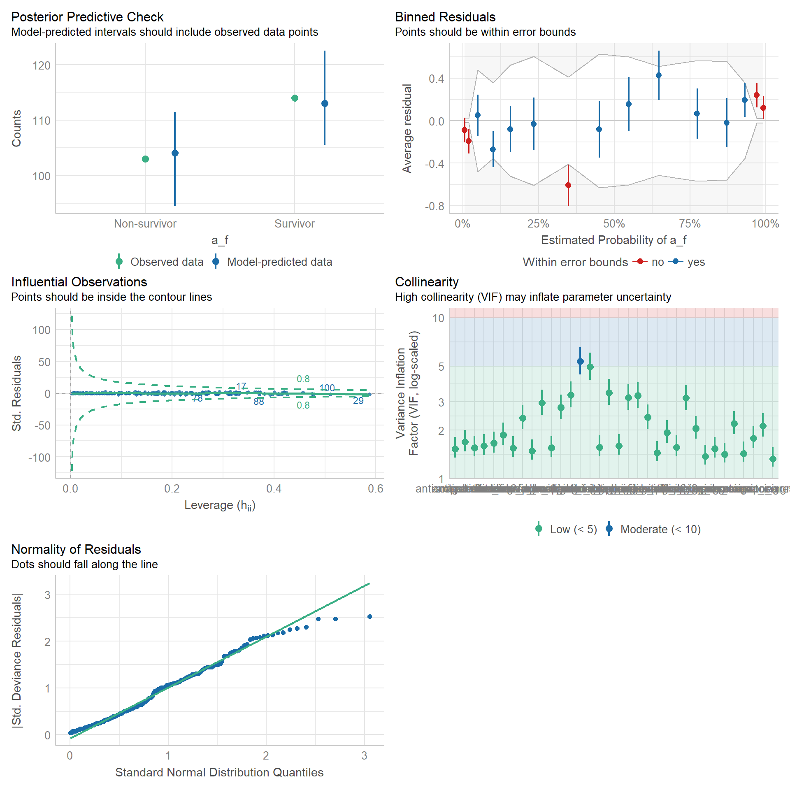
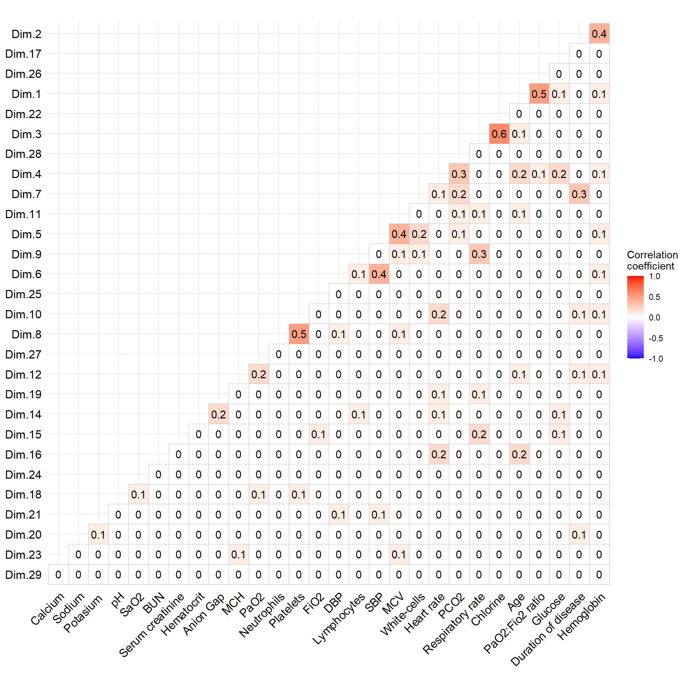
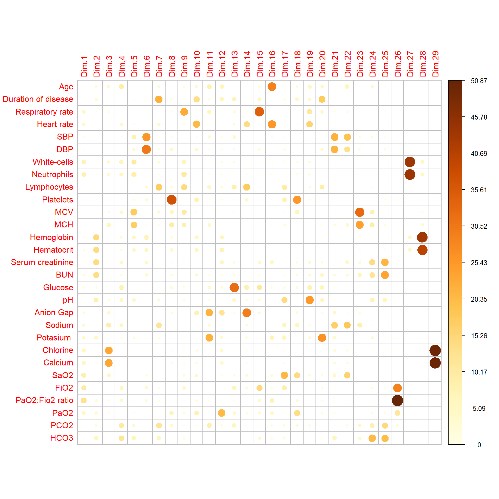
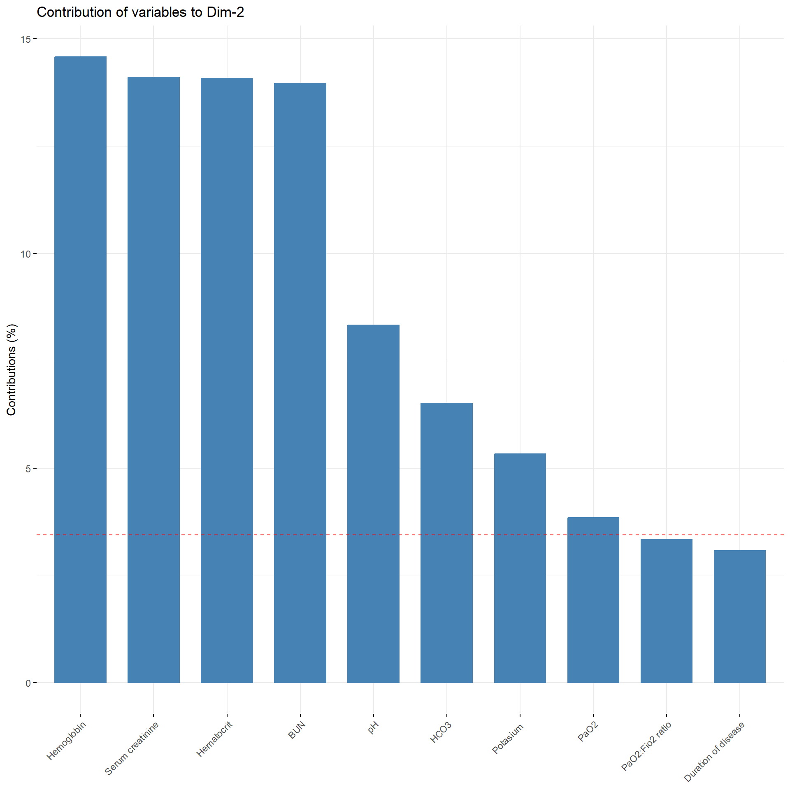
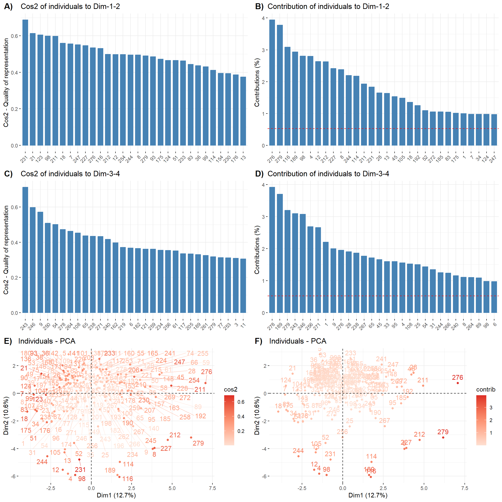
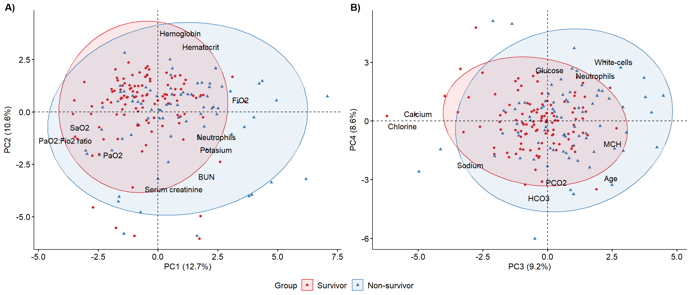

Code
knitr::opts_chunk$set(message = FALSE, warning = FALSE)knitr::opts_chunk$set(message = FALSE, warning = FALSE)# Packages
pacman::p_load(rio,
here,
rfextras,
reportfactory,
tidyverse,
ggcorrplot,
ggsci,
ggpubr,
ggfortify,
ggbiplot,
finalfit,
gtsummary,
flextable,
broom,
performance,
lmtest,
stats,
Rtsne,
FactoMineR,
factoextra,
corrplot,
grateful)
# My function scripts
rfextras::load_scripts()clean_data <- import(here("data", "clean_data.tsv"))# Make my gtsummary theme
my_theme <-
list(
"pkgwide-fn:pvalue_fun" = function(x) style_pvalue(x, digits = 2),
"pkgwide-fn:prependpvalue_fun" = function(x) style_pvalue(x, digits = 2, prepend_p = TRUE),
"tbl_summary-str:continuous_stat" = "{median} ({p25}, {p75})",
"tbl_summary-str:categorical_stat" = "{n} ({p}%)",
"tbl_summary-fn:percent_fun" = function(x) style_number(x, digits = 1, scale = 100),
"tbl_summary-arg:missing" = "no"
)
# Combine themes
set_gtsummary_theme(my_theme, theme_gtsummary_compact())
theme_gtsummary_language(language = "en")Possible risk factors associated with mortality from COVID-19 in patients with type II diabetes mellitus, each factor is labeled with a legend that indicates its clinical importance, accuracy, and number of events.
\####\###\##\#data <- clean_data |>
mutate(edad = ff_label(edad, "Age (years)"), ###
edad.c = case_when(edad <= 60 ~ "< 61",
edad > 60 ~ ">= 61") |>
fct_relevel("< 61", ">= 61") |>
ff_label("Age (years)"),
sexo = factor(sexo) |> ###
fct_relevel("Female", "Male") |>
ff_label("Sex"),
t_de_enfermedad = ff_label(t_de_enfermedad,
"Duration of disease (days)"), ##
tabaquismo = factor(tabaquismo) |> ####
fct_relevel("No", "Yes") |>
ff_label("Smoking"),
alcoholismo = factor(alcoholismo) |> ####
fct_relevel("No", "Yes") |>
ff_label("Alcoholism"),
obesidad = factor(obesidad) |> ###
fct_relevel("No", "Yes") |>
ff_label("Obesity"),
asma_bronquial = factor(asma_bronquial) |> ####
fct_relevel("No", "Yes") |>
ff_label("Asthma"),
hta = factor(hta) |> ###
fct_relevel("No", "Yes") |>
ff_label("Hypertension"),
dislipidemia = factor(dislipidemia) |> ##
fct_relevel("No", "Yes") |>
ff_label("Dyslipidemia"),
ecv = factor(ecv) |> ####
fct_relevel("No", "Yes") |>
ff_label("Cerebrovascular disease"),
neoplasia = factor(neoplasia) |> ####
fct_relevel("No", "Yes") |>
ff_label("Cancer"),
vih = factor(vih) |> ####
fct_relevel("No", "Yes") |>
ff_label("HIV"),
e_inmunosupresora =
case_when(neoplasia == "Yes" | vih == "Yes" | e_inmunosupresora == "Yes" ~ "Yes",
TRUE ~ "No") |> ####
fct_relevel("No", "Yes") |>
ff_label("Immunesupressive disease"),
erc = factor(erc) |> ####
fct_recode("No" = "ON",) |>
fct_relevel("No", "Yes") |>
ff_label("Chronic renal disease"),
f_renal_aguda = factor(f_renal_aguda) |> #
fct_relevel("No", "Yes") |>
ff_label("Acute kidney injury"),
fiebre = factor(fiebre) |> ###
fct_relevel("No", "Yes") |>
ff_label("Fever"),
tos = factor(tos) |> ###
fct_relevel("No", "Yes") |>
ff_label("Dry cought"),
dolor_de_garganta = factor(dolor_de_garganta)|> #
fct_relevel("No", "Yes") |>
ff_label("Sore throat"),
malestar_general = factor(malestar_general) |> #
fct_relevel("No", "Yes") |>
ff_label("General malaise"),
cefalea = factor(cefalea) |> #
fct_relevel("No", "Yes") |>
ff_label("Headache"),
astenia = factor(astenia) |> ###
fct_relevel("No", "Yes") |>
ff_label("Asthenia"),
anosmia = factor(anosmia) |> ###
fct_relevel("No", "Yes") |>
ff_label("Anosmia"),
disgeusia = factor(disgeusia) |> ###
fct_relevel("No", "Yes") |>
ff_label("Dysgeusia"),
disnea = factor(disnea) |> ###
fct_relevel("No", "Yes") |>
ff_label("Dyspnea"),
perdida_de_peso = factor(perdida_de_peso) |> ####
fct_relevel("No", "Yes") |>
ff_label("Weight loss"),
estertores_pulmonares = factor(estertores_pulmonares) |> ###
fct_relevel("No", "Yes") |>
ff_label("Lung crackles"),
diarrrea = factor(diarrrea) |> ###
fct_relevel("No", "Yes") |>
ff_label("Diarrhea"),
emesis = factor(emesis) |> ###
fct_relevel("No", "Yes") |>
ff_label("Vomiting"),
dolor_abdominal = factor(dolor_abdominal) |> ####
fct_relevel("No", "Yes") |>
ff_label("Abdominal pain"),
poliuria = factor(poliuria) |> ####
fct_relevel("Yes", "No") |>
ff_label("Polyuria"),
polidipsia = factor(polidipsia) |> ####
fct_relevel("Yes", "No") |>
ff_label("Polidipsia"),
polifagia = factor(polifagia) |> ####
fct_relevel("Yes", "No") |>
ff_label("Poliphagia"),
disgeusia = factor(disgeusia) |> ####
fct_relevel("Yes", "No") |>
ff_label("Dysgeusia"),
taquipnea = factor(taquipnea) |> ###
fct_relevel("No", "Yes") |>
ff_label("Tachypnea"),
sensorio = factor(sensorio) |> #
fct_recode("Awake" = "DESPIERTO",
"Sleepy" = "SOMNOLIENTO",
"Drowsy" = "SOPOROSO") |>
fct_relevel("Awake",
"Sleepy",
"Drowsy") |>
ff_label("Sensory"),
ingreso_a_uci = factor(ingreso_a_uci) |> ####
fct_relevel("No", "Yes") |>
ff_label("ICU admission"),
corticoides = case_when(corticoides == "No" ~ "No",
TRUE ~ "Yes") |> ###
fct_relevel("No", "Yes") |>
ff_label("Corticosteroids"),
anticoagulantes = factor(anticoagulantes) |> ###
fct_recode("Enoxaparin" = "ENOXAPARINA") |>
fct_relevel("No", "Enoxaparin") |>
ff_label("Anticoagulants"),
antiparasitarios = factor(antiparasitarios) |> ###
fct_recode("Ivermectin" = "IVERMECTINA") |>
fct_relevel("No", "Ivermectin") |>
ff_label("Antiparasitics"),
antipaludicos = factor(antipaludicos) |> ###
fct_recode("Hydroxychloroquine" = "HIDROXICLOROQUINA") |>
fct_relevel("No", "Hydroxychloroquine") |>
ff_label("Antimalarials"),
antibioticos = case_when(antibioticos == "No" ~ "No",
TRUE ~ "Yes") |> ###
fct_relevel("No", "Yes") |>
ff_label("Antibiotics"),
pronacion = factor(pronacion) |> ###
fct_relevel("Yes", "No") |>
ff_label("Pronation"),
hemodialisis = factor(hemodialisis) |> #
fct_relevel("No", "Yes") |>
ff_label("Hemodialysis"),
sepsis = factor(sepsis) |> #
fct_relevel("No", "Yes") |>
ff_label("Sepsis"),
shock_septico = factor(shock_septico) |> #
fct_relevel("No", "Yes") |>
ff_label("Septic shock"),
p_a_sistolica_ingreso = ff_label(p_a_sistolica_ingreso,
"SBP (mmHg)"), ###
p_a_sistolica_ingreso.c = case_when(p_a_sistolica_ingreso < 140 ~ "< 140",
TRUE ~ ">= 140") |>
fct_relevel("< 140",">= 140") |>
ff_label("SBP (mmHg)"),
p_a_diastolica_ingreso = ff_label(p_a_diastolica_ingreso,
"DBP (mmHg)"), ###
p_a_diastolica_ingreso.c = case_when(p_a_diastolica_ingreso < 90 ~ "< 90",
TRUE ~ ">= 90") |>
fct_relevel("< 90", ">= 90") |>
ff_label("DBP (mmHg)"),
hemoglobina_ingreso = ff_label(hemoglobina_ingreso, "Hemoglobin (g/dL)"), ###
hemoglobina_ingreso.c = case_when(hemoglobina_ingreso <= 12 ~ "<= 12",
TRUE ~ "> 12") |>
fct_relevel("> 12", "<= 12") |>
ff_label("Hemoglobin (g/dL)"),
hematocrito_ingreso = ff_label(hematocrito_ingreso, "Hematocrit (%)"), ##
hematocrito_ingreso.c = case_when(hematocrito_ingreso < 36 ~ "< 36",
TRUE ~ ">= 36") |>
fct_relevel(">= 36", "< 36") |>
ff_label("Hematocrit (%)"),
mcv_ingreso = ff_label(mcv_ingreso, "MCV (mm^3)"), ##
mch_ingreso = ff_label(mch_ingreso, "MCH (pg)"), ##
leucocitos_ingreso = leucocitos_ingreso/1000, ###
leucocitos_ingreso = ff_label(leucocitos_ingreso, "White-cells (×10^−9/L)"),
leucocitos_ingreso.c = case_when(leucocitos_ingreso < 4 ~ "< 4",
leucocitos_ingreso >= 4 & leucocitos_ingreso <= 10 ~ "4-10",
leucocitos_ingreso > 10 ~ "> 10") |>
fct_relevel("4-10", "< 4", "> 10") |>
ff_label("White-cells (×10^−9/L)"),
linfocitos_ingreso = linfocitos_ingreso/1000, ###
linfocitos_ingreso = ff_label(linfocitos_ingreso, "Lymphocytes (×10^−9/L)"),
linfocitos_ingreso.c = case_when(linfocitos_ingreso < 1 ~ "< 1",
TRUE ~ ">= 1") |>
fct_relevel(">= 1", "< 1") |>
ff_label("Lymphocytes (×10^−9/L)"),
neutrofilos_ingreso = neutrofilos_ingreso/1000, ###
neutrofilos_ingreso = ff_label(neutrofilos_ingreso, "Neutrophils (×10^−9/L)"),
neutrofilos_ingreso.c = case_when(neutrofilos_ingreso > 6.3 ~ "> 6.3",
TRUE ~ "<= 6.3") |>
fct_relevel("<= 6.3", "> 6.3") |>
ff_label("Neutrophils (×10^−9/L)"),
plaquetas_ingreso = plaquetas_ingreso/1000, ###
plaquetas_ingreso = ff_label(plaquetas_ingreso, "Platelets (×10^−9/L)"),
plaquetas_ingreso.c = case_when(plaquetas_ingreso < 125 ~ "< 125",
TRUE ~ ">= 125") |>
fct_relevel(">= 125", "< 125") |>
ff_label("Platelets (×10^−9/L)"),
glucosa_ingreso = ff_label(glucosa_ingreso, "Glucose (mg/dL)"), ###
urea_ingreso = ff_label(urea_ingreso, "Blood urea nitrogen (mg/dL)"), ###
urea_ingreso.c = case_when(urea_ingreso < 20 ~ "< 20",
TRUE ~ ">= 20") |>
fct_relevel("< 20", ">= 20") |>
ff_label("Blood Urea Nitrogen (mg/dL)"),
creatinina_ingreso = ff_label(creatinina_ingreso, "Serum creatinine (mg/dL)"), ###
creatinina_ingreso.c = case_when(creatinina_ingreso < 1.3 ~ "< 1.3",
TRUE ~ ">= 1.3") |>
fct_relevel("< 1.3", ">= 1.3") |>
ff_label("Serum creatinine (mg/dL)"),
ph_ingreso = ff_label(ph_ingreso, "pH"), ##
ph_ingreso.c = case_when(ph_ingreso < 7.35 ~ "< 7.35",
ph_ingreso >= 7.35 & ph_ingreso <= 7.45 ~ "7.35 - 7.45",
ph_ingreso > 7.45 ~ "> 7.45") |>
fct_relevel("7.35 - 7.45", "< 7.35", "> 7.45") |>
ff_label("pH"),
frecuencia_cardiaca_ingreso = ff_label(frecuencia_cardiaca_ingreso,
"Heart rate"), ##
frecuencia_cardiaca_ingreso.c = case_when(frecuencia_cardiaca_ingreso < 100 ~ "< 100",
TRUE ~ ">= 100") |>
fct_relevel("< 100", ">= 100") |>
ff_label("Heart rate"),
frecuencia_respiratoria_ingreso = ff_label(frecuencia_respiratoria_ingreso,
"Respiratory rate"), ##
frecuencia_respiratoria_ingreso.c =
case_when(frecuencia_respiratoria_ingreso < 24 ~ "< 24",
frecuencia_respiratoria_ingreso >= 24 &
frecuencia_respiratoria_ingreso <= 30 ~ "24 - 30",
frecuencia_respiratoria_ingreso > 30 ~ "> 30") |> ##
fct_relevel("24 - 30", "< 24", "> 30") |>
ff_label("Respiratory rate"),
saturacion_de_oxigeno_ingreso = ff_label(saturacion_de_oxigeno_ingreso,
"SaO2 (%)"), ####
saturacion_de_oxigeno_ingreso.c =
case_when(saturacion_de_oxigeno_ingreso < 94 ~ "< 94",
TRUE ~ ">= 94") |> ###
fct_relevel(">= 94", "< 94") |>
ff_label("SaO2"),
fio2_aga_ingreso = ff_label(fio2_aga_ingreso, "FiO2 (%)"), ###
fio2_aga_ingreso.c = case_when(fio2_aga_ingreso > 21 ~ "> 21 (O2 therapy)",
TRUE ~ "21") |>
fct_relevel("> 21 (O2 therapy)", "21") |>
ff_label("FiO2 (%)"),
po2_ingreso = ff_label(po2_ingreso, "PaO2 (mmHg)"), ##
po2_ingreso.c = case_when(po2_ingreso < 60 ~ "< 60",
TRUE ~ ">= 60") |>
fct_relevel(">= 60", "< 60") |>
ff_label("PaO2"),
pco2_ingreso = ff_label(pco2_ingreso,
"PCO (mmHg)"), ##
pco2_ingreso.c = case_when(pco2_ingreso < 36 ~ "< 36",
TRUE ~ ">= 36") |>
fct_relevel("< 36", ">= 36") |>
ff_label("PCO (mmHg)"),
pafi_ingreso = ff_label(pafi_ingreso, "PaO2:Fio2 ratio"), ###
pafi_ingreso.c = case_when(pafi_ingreso <= 200 ~ "<= 200",
TRUE ~ "> 200") |>
fct_relevel("> 200", "<= 200") |>
ff_label("PaO2:Fio2 ratio"),
hco3_ingreso = ff_label(hco3_ingreso, "HCO3 (mmol/L)"), ##
hco3_ingreso.c = case_when(hco3_ingreso < 21 ~ "< 21",
hco3_ingreso >= 21 & hco3_ingreso <= 28 ~ "21 - 28",
hco3_ingreso > 28 ~ "> 28") |>
fct_relevel("21 - 28", "< 21", "> 28") |>
ff_label("HCO3 (mEq/L)"),
anion_gap_ingreso = ff_label(anion_gap_ingreso, "Anion Gap (mEq/L)"), ##
anion_gap_ingreso.c = case_when(anion_gap_ingreso < 7 ~ "< 7",
anion_gap_ingreso >= 7 & anion_gap_ingreso <= 13 ~ "7 - 13",
anion_gap_ingreso > 13 ~ "> 13") |>
fct_relevel("7 - 13", "< 7", "> 13") |>
ff_label("Anion Gap (mEq/L)"),
sodio_ingreso = ff_label(sodio_ingreso, "Sodium (mmol/L)"), ##
potasio_ingreso = ff_label(potasio_ingreso, "Potasium (mEq/L)"), ##
calcio_ingreso = ff_label(calcio_ingreso, "Calcium (mmol/L)"), ##
cloro_ingreso = ff_label(calcio_ingreso, "Chlorine (mmol/L)") ##
)data <- data |>
mutate(a_f = factor(a_f) |>
fct_recode("Non-survivor" = "FALLECIDO",
"Survivor" = "ALTA") |>
fct_relevel("Survivor", "Non-survivor"))data <- data |>
select(# Demographics characteristics and history
edad, edad.c, sexo, tabaquismo, alcoholismo, dislipidemia, obesidad,
hta, ecv, neoplasia, vih, e_inmunosupresora, erc, hemodialisis,
asma_bronquial, t_de_enfermedad,
# Signs and symptoms
fiebre, tos, dolor_de_garganta, malestar_general, cefalea, taquipnea,
disnea, anosmia, disgeusia, estertores_pulmonares, diarrrea, emesis,
astenia, dolor_abdominal, perdida_de_peso, poliuria, polidipsia,
polifagia, sensorio,
# Vital signs
frecuencia_respiratoria_ingreso, frecuencia_respiratoria_ingreso.c,
frecuencia_cardiaca_ingreso, frecuencia_cardiaca_ingreso.c,
p_a_sistolica_ingreso, p_a_sistolica_ingreso.c, p_a_diastolica_ingreso,
p_a_diastolica_ingreso.c,
# Laboratory findings
leucocitos_ingreso, leucocitos_ingreso.c, neutrofilos_ingreso,
neutrofilos_ingreso.c, linfocitos_ingreso, linfocitos_ingreso.c,
plaquetas_ingreso, plaquetas_ingreso.c, mcv_ingreso, mch_ingreso,
hemoglobina_ingreso, hemoglobina_ingreso.c, hematocrito_ingreso,
hematocrito_ingreso.c, creatinina_ingreso, creatinina_ingreso.c,
urea_ingreso, urea_ingreso.c, glucosa_ingreso, ph_ingreso,
ph_ingreso.c, anion_gap_ingreso, anion_gap_ingreso.c,
sodio_ingreso, potasio_ingreso, cloro_ingreso, calcio_ingreso,
# Blood gas findings
saturacion_de_oxigeno_ingreso, saturacion_de_oxigeno_ingreso.c,
fio2_aga_ingreso, fio2_aga_ingreso.c, pafi_ingreso, pafi_ingreso.c,
po2_ingreso, po2_ingreso.c, pco2_ingreso, pco2_ingreso.c,
hco3_ingreso, hco3_ingreso.c,
# Treatment
antibioticos, corticoides, anticoagulantes, antiparasitarios,
antipaludicos, pronacion,
# outcomes
a_f
)# Selection of factors
categorical <- data |>
dplyr::select(where(is.factor))
# Multiple tables
lapply(categorical, function(x) table(x, categorical$a_f))# Selection of numerical variables and remove missing values
numerical <- data |>
dplyr::select(where(is.numeric), a_f) |>
na.omit()
# Variable groups
dem_numerical <- numerical |>
dplyr::select(edad:p_a_diastolica_ingreso)
hemo_numerical <- numerical |>
dplyr::select(leucocitos_ingreso:mch_ingreso)
biochem_numerical <- numerical |>
dplyr::select(hemoglobina_ingreso:ph_ingreso)
electro_numerical <- numerical |>
dplyr::select(anion_gap_ingreso:calcio_ingreso, hco3_ingreso)
gas_numerical <- numerical |>
dplyr::select(saturacion_de_oxigeno_ingreso:pco2_ingreso)
# Formal and informal exploration
total_plots(hemo_numerical)
# Summary statistics
lapply(numerical, function(x) summary(x))# Selection of numerical variables and remove missing values of survivors
surv_numerical <- data |>
dplyr::select(where(is.numeric), a_f) |>
dplyr::filter(a_f == "Survivor") |>
na.omit()
surv_dem_numerical <- surv_numerical |>
dplyr::select(edad:p_a_diastolica_ingreso)
surv_hemo_numerical <- surv_numerical |>
dplyr::select(leucocitos_ingreso:mch_ingreso)
surv_biochem_numerical <- surv_numerical |>
dplyr::select(hemoglobina_ingreso:ph_ingreso)
surv_electro_numerical <- surv_numerical |>
dplyr::select(anion_gap_ingreso:calcio_ingreso, hco3_ingreso)
surv_gas_numerical <- surv_numerical |>
dplyr::select(saturacion_de_oxigeno_ingreso:pco2_ingreso)
# Selection of numerical variables and remove missing values of non-survivors
non_numerical <- data |>
dplyr::select(where(is.numeric), a_f) |>
dplyr::filter(a_f == "Non-survivor") |>
na.omit()
non_dem_numerical <- non_numerical |>
dplyr::select(edad:p_a_diastolica_ingreso)
non_hemo_numerical <- non_numerical |>
dplyr::select(leucocitos_ingreso:mch_ingreso)
non_biochem_numerical <- non_numerical |>
dplyr::select(hemoglobina_ingreso:ph_ingreso)
non_electro_numerical <- non_numerical |>
dplyr::select(anion_gap_ingreso:calcio_ingreso, hco3_ingreso)
non_gas_numerical <- non_numerical |>
dplyr::select(saturacion_de_oxigeno_ingreso:pco2_ingreso)# Summary statistics of survivors
lapply(surv_numerical, function(x) summary(x))
# Summary statistics of non-survivors
lapply(non_numerical, function(x) summary(x))# Variable groups for clustering
a_dem_numerical <- numerical |>
dplyr::select(edad:p_a_diastolica_ingreso, a_f)
a_hemo_numerical <- numerical |>
dplyr::select(leucocitos_ingreso:mch_ingreso, a_f)
a_biochem_numerical <- numerical |>
dplyr::select(hemoglobina_ingreso:ph_ingreso, a_f)
a_electro_numerical <- numerical |>
dplyr::select(anion_gap_ingreso:calcio_ingreso, hco3_ingreso, a_f)
a_gas_numerical <- numerical |>
dplyr::select(saturacion_de_oxigeno_ingreso:pco2_ingreso, a_f)# Formal and informal exploration
two_groups_plots(surv_hemo_numerical, non_hemo_numerical, a_hemo_numerical)
We explore the correlation between independent variables to identify multicollinearity. These variables by their nature are different except for white-cells and PaO2:Fio2 ratio. In the case of using white-cells and neutrophils or lymphocytes, it’s possible that the information provided by white-cells may be redundant and generate biased estimates. The same applies to PaO2:Fio2 ratio and FiO2. Considering the clinical relevance of PaO2:Fio2 ratio, it’s better to work with the latter.
# Selection of numerical variables
data_num = data |>
dplyr::select(where(is.numeric)) |>
na.omit()
# Rename variables
cor_data = rename(data_num, "Age" = edad,
"Respiratory rate" = frecuencia_respiratoria_ingreso,
"Heart rate" = frecuencia_cardiaca_ingreso,
"SBP" = p_a_sistolica_ingreso,
"DBP" = p_a_diastolica_ingreso,
"White-cells" = leucocitos_ingreso,
"Neutrophils" = neutrofilos_ingreso,
"Lymphocytes" = linfocitos_ingreso,
"Platelets" = plaquetas_ingreso,
"MCV" = mcv_ingreso,
"MCH" = mch_ingreso,
"Hemoglobin" = hemoglobina_ingreso,
"Hematocrit" = hematocrito_ingreso,
"Serum creatinine" = creatinina_ingreso,
"BUN" = urea_ingreso,
"Glucose" = glucosa_ingreso,
"pH" = ph_ingreso,
"Anion Gap" = anion_gap_ingreso,
"Sodium" = sodio_ingreso,
"Potasium " = potasio_ingreso,
"Chlorine" = cloro_ingreso,
"Calcium" = calcio_ingreso,
"SaO2" = saturacion_de_oxigeno_ingreso,
"FiO2" = fio2_aga_ingreso,
"PaO2:Fio2 ratio" = pafi_ingreso,
"PaO2" = po2_ingreso,
"PCO2" = pco2_ingreso,
"HCO3" = hco3_ingreso,
"Duration of disease" = t_de_enfermedad)
# Correlation matrix
corr <- round(cor(cor_data), 1)
# Visualization
my_ggcorrplor(corr) -> FS1
# View
FS1
# Demographics characteristics and history
table_1.1 <- data |>
tbl_summary(include = c(edad:t_de_enfermedad, a_f),
by = a_f, percent = "column",
digits = list(all_continuous() ~ c(1, 1)))|>
add_overall() |>
add_p() |>
bold_p(t = 0.05) |>
modify_header(all_stat_cols() ~ "**{level}** (n = {n})",
stat_0 = "**All patients** (n = {N})",
p.value = "**p value**") |>
modify_spanning_header(all_stat_cols(stat_0 = FALSE) ~ "**Mortality**") |>
modify_caption("**Table 1**. Demographics and clinical characteristics of patients on admission")
# Signs and symptoms
table_1.2 <- data |>
tbl_summary(include = c(fiebre:sensorio, a_f),
by = a_f, percent = "column",
digits = list(all_continuous() ~ c(1, 1))) |>
modify_header(all_stat_cols() ~ "**{level}** (n = {n})") |>
add_overall() |>
add_p() |>
bold_p(t = 0.05)
# Vital signs
table_1.3 <- data |>
tbl_summary(include = c(frecuencia_respiratoria_ingreso:p_a_diastolica_ingreso.c, a_f),
by = a_f, percent = "column",
digits = list(all_continuous() ~ c(1, 1))) |>
modify_header(all_stat_cols() ~ "**{level}** (n = {n})") |>
add_overall() |>
add_p() |>
bold_p(t = 0.05)
# Stack tables
table_1 = tbl_stack(
list(table_1.1, table_1.2, table_1.3),
group_header = c("Demographics characteristics and history", "Signs and symtoms", "Vital signs"),
quiet = TRUE)
# View
table_1| Characteristic | All patients (n = 287)1 | Mortality | p value2 | |
|---|---|---|---|---|
| Survivor (n = 155)1 | Non-survivor (n = 132)1 | |||
| Demographics characteristics and history | ||||
| Age (years) | 60.0 (51.0, 68.0) | 56.0 (47.0, 64.5) | 64.5 (57.8, 73.0) | <0.001 |
| Age (years) | <0.001 | |||
| < 61 | 149 (51.9%) | 102 (65.8%) | 47 (35.6%) | |
| >= 61 | 138 (48.1%) | 53 (34.2%) | 85 (64.4%) | |
| Sex | 0.46 | |||
| Female | 98 (34.1%) | 50 (32.3%) | 48 (36.4%) | |
| Male | 189 (65.9%) | 105 (67.7%) | 84 (63.6%) | |
| Smoking | 2 (0.7%) | 1 (0.6%) | 1 (0.8%) | >0.99 |
| Alcoholism | 2 (0.7%) | 1 (0.6%) | 1 (0.8%) | >0.99 |
| Dyslipidemia | 4 (1.4%) | 3 (1.9%) | 1 (0.8%) | 0.63 |
| Obesity | 44 (15.3%) | 29 (18.7%) | 15 (11.4%) | 0.085 |
| Hypertension | 102 (35.5%) | 43 (27.7%) | 59 (44.7%) | 0.003 |
| Cerebrovascular disease | 4 (1.4%) | 0 (0.0%) | 4 (3.0%) | 0.044 |
| Cancer | 1 (0.3%) | 0 (0.0%) | 1 (0.8%) | 0.46 |
| HIV | 1 (0.3%) | 0 (0.0%) | 1 (0.8%) | 0.46 |
| Immunesupressive disease | 3 (1.0%) | 1 (0.6%) | 2 (1.5%) | 0.60 |
| Chronic renal disease | 10 (3.5%) | 5 (3.2%) | 5 (3.8%) | >0.99 |
| Hemodialysis | 5 (1.9%) | 1 (0.8%) | 4 (3.0%) | 0.37 |
| Asthma | 6 (2.1%) | 4 (2.6%) | 2 (1.5%) | 0.69 |
| Duration of disease (days) | 7.0 (5.0, 10.0) | 7.0 (5.0, 10.0) | 7.0 (5.0, 10.0) | 0.23 |
| Signs and symtoms | ||||
| Fever | 170 (59.2%) | 82 (52.9%) | 88 (66.7%) | 0.018 |
| Dry cought | 218 (76.0%) | 113 (72.9%) | 105 (79.5%) | 0.19 |
| Sore throat | 92 (32.1%) | 59 (38.1%) | 33 (25.0%) | 0.018 |
| General malaise | 206 (71.8%) | 115 (74.2%) | 91 (68.9%) | 0.32 |
| Headache | 62 (21.6%) | 49 (31.6%) | 13 (9.8%) | <0.001 |
| Tachypnea | 99 (34.5%) | 65 (41.9%) | 34 (25.8%) | 0.004 |
| Dyspnea | 242 (84.3%) | 120 (77.4%) | 122 (92.4%) | <0.001 |
| Anosmia | 16 (5.6%) | 11 (7.1%) | 5 (3.8%) | 0.22 |
| Dysgeusia | 13 (4.5%) | 8 (5.2%) | 5 (3.8%) | 0.58 |
| Lung crackles | 141 (49.1%) | 91 (58.7%) | 50 (37.9%) | <0.001 |
| Diarrhea | 18 (6.3%) | 8 (5.2%) | 10 (7.6%) | 0.40 |
| Vomiting | 17 (5.9%) | 6 (3.9%) | 11 (8.3%) | 0.11 |
| Asthenia | 48 (16.7%) | 34 (21.9%) | 14 (10.6%) | 0.010 |
| Abdominal pain | 12 (4.2%) | 8 (5.2%) | 4 (3.0%) | 0.37 |
| Weight loss | 3 (1.0%) | 3 (1.9%) | 0 (0.0%) | 0.25 |
| Polyuria | 12 (4.2%) | 9 (5.8%) | 3 (2.3%) | 0.14 |
| Polidipsia | 10 (3.5%) | 8 (5.2%) | 2 (1.5%) | 0.11 |
| Poliphagia | 5 (1.7%) | 4 (2.6%) | 1 (0.8%) | 0.38 |
| Sensory | <0.001 | |||
| Awake | 250 (91.2%) | 151 (97.4%) | 99 (83.2%) | |
| Sleepy | 17 (6.2%) | 3 (1.9%) | 14 (11.8%) | |
| Drowsy | 7 (2.6%) | 1 (0.6%) | 6 (5.0%) | |
| Vital signs | ||||
| Respiratory rate | 26.0 (23.0, 30.0) | 26.0 (22.3, 28.0) | 28.0 (24.0, 32.0) | <0.001 |
| Respiratory rate | 0.006 | |||
| 24 - 30 | 138 (51.7%) | 76 (52.1%) | 62 (51.2%) | |
| < 24 | 70 (26.2%) | 47 (32.2%) | 23 (19.0%) | |
| > 30 | 59 (22.1%) | 23 (15.8%) | 36 (29.8%) | |
| Heart rate | 100.0 (85.8, 113.0) | 98.0 (82.3, 107.8) | 105.5 (92.0, 115.8) | <0.001 |
| Heart rate | <0.001 | |||
| < 100 | 133 (46.3%) | 86 (55.5%) | 47 (35.6%) | |
| >= 100 | 154 (53.7%) | 69 (44.5%) | 85 (64.4%) | |
| SBP (mmHg) | 115.0 (100.0, 130.0) | 110.0 (100.0, 120.0) | 120.0 (100.0, 130.0) | 0.25 |
| SBP (mmHg) | 0.002 | |||
| < 140 | 246 (85.7%) | 142 (91.6%) | 104 (78.8%) | |
| >= 140 | 41 (14.3%) | 13 (8.4%) | 28 (21.2%) | |
| DBP (mmHg) | 70.0 (60.0, 80.0) | 70.0 (60.0, 80.0) | 70.0 (60.0, 80.0) | 0.13 |
| DBP (mmHg) | 0.009 | |||
| < 90 | 258 (89.9%) | 146 (94.2%) | 112 (84.8%) | |
| >= 90 | 29 (10.1%) | 9 (5.8%) | 20 (15.2%) | |
| 1 Median (IQR); n (%) | ||||
| 2 Wilcoxon rank sum test; Pearson’s Chi-squared test; Fisher’s exact test | ||||
# Laboratory findings
table_2.1 <- data |>
tbl_summary(include = c(leucocitos_ingreso:calcio_ingreso, a_f),
by = a_f, percent = "column",
digits = list(all_continuous() ~ c(1, 1)))|>
add_overall() |>
add_p() |>
bold_p(t = 0.05) |>
modify_header(all_stat_cols() ~ "**{level}** (n = {n})",
stat_0 = "**All patients** (n = {N})",
p.value = "**p value**") |>
modify_column_alignment(columns = everything(), align = "left") |>
modify_spanning_header(all_stat_cols(stat_0 = FALSE) ~ "**Mortality**") |>
modify_caption("**Table 2**. Laboratory findings and treatment of patients on admission")
# Blood gas findings
table_2.2 <- data |>
tbl_summary(include = c(saturacion_de_oxigeno_ingreso:hco3_ingreso.c, a_f),
by = a_f, percent = "column",
digits = list(all_continuous() ~ c(1, 1))) |>
modify_header(all_stat_cols() ~ "**{level}** (n = {n})") |>
add_overall() |>
add_p() |>
bold_p(t = 0.05)
# Treatments
table_2.3 <- data |>
tbl_summary(include = c(antibioticos:pronacion, a_f),
by = a_f, percent = "column",
digits = list(all_continuous() ~ c(1, 1))) |>
modify_header(all_stat_cols() ~ "**{level}** (n = {n})") |>
add_overall() |>
add_p() |>
bold_p(t = 0.05)
# Stack tables
table_2 = tbl_stack(
list(table_2.1, table_2.2, table_2.3),
group_header = c("Laboratory findings", "Blood gas findings", "Treatment"),
quiet = TRUE)
# View
table_2| Characteristic | All patients (n = 287)1 | Mortality | p value2 | |
|---|---|---|---|---|
| Survivor (n = 155)1 | Non-survivor (n = 132)1 | |||
| Laboratory findings | ||||
| White-cells (×10^−9/L) | 10.6 (7.8, 16.6) | 9.0 (6.5, 13.1) | 14.5 (10.0, 19.2) | <0.001 |
| White-cells (×10^−9/L) | <0.001 | |||
| 4-10 | 104 (38.7%) | 75 (50.3%) | 29 (24.2%) | |
| < 4 | 19 (7.1%) | 15 (10.1%) | 4 (3.3%) | |
| > 10 | 146 (54.3%) | 59 (39.6%) | 87 (72.5%) | |
| Neutrophils (×10^−9/L) | 9.0 (6.0, 14.8) | 7.2 (4.5, 11.7) | 13.0 (8.8, 17.9) | <0.001 |
| Neutrophils (×10^−9/L) | <0.001 | |||
| <= 6.3 | 91 (31.7%) | 67 (43.2%) | 24 (18.2%) | |
| > 6.3 | 196 (68.3%) | 88 (56.8%) | 108 (81.8%) | |
| Lymphocytes (×10^−9/L) | 0.9 (0.6, 1.3) | 1.0 (0.7, 1.5) | 0.7 (0.4, 1.2) | <0.001 |
| Lymphocytes (×10^−9/L) | 0.010 | |||
| >= 1 | 141 (49.1%) | 87 (56.1%) | 54 (40.9%) | |
| < 1 | 146 (50.9%) | 68 (43.9%) | 78 (59.1%) | |
| Platelets (×10^−9/L) | 254.5 (193.5, 342.0) | 255.0 (190.0, 344.0) | 251.0 (200.0, 331.0) | 0.93 |
| Platelets (×10^−9/L) | 0.88 | |||
| >= 125 | 266 (92.7%) | 144 (92.9%) | 122 (92.4%) | |
| < 125 | 21 (7.3%) | 11 (7.1%) | 10 (7.6%) | |
| MCV (mm^3) | 90.9 (87.7, 93.6) | 90.2 (87.2, 92.8) | 91.3 (88.2, 94.4) | 0.048 |
| MCH (pg) | 29.3 (28.1, 30.3) | 29.2 (27.9, 30.1) | 29.4 (28.4, 30.6) | 0.045 |
| Hemoglobin (g/dL) | 13.7 (12.0, 14.9) | 13.7 (12.6, 15.0) | 13.7 (11.4, 14.9) | 0.42 |
| Hemoglobin (g/dL) | 0.022 | |||
| > 12 | 216 (75.3%) | 125 (80.6%) | 91 (68.9%) | |
| <= 12 | 71 (24.7%) | 30 (19.4%) | 41 (31.1%) | |
| Hematocrit (%) | 42.0 (37.5, 46.0) | 42.7 (38.5, 46.0) | 41.7 (35.3, 46.0) | 0.23 |
| Hematocrit (%) | 0.031 | |||
| >= 36 | 229 (79.8%) | 131 (84.5%) | 98 (74.2%) | |
| < 36 | 58 (20.2%) | 24 (15.5%) | 34 (25.8%) | |
| Serum creatinine (mg/dL) | 0.8 (0.6, 1.2) | 0.7 (0.6, 1.0) | 1.0 (0.7, 1.5) | <0.001 |
| Serum creatinine (mg/dL) | 0.001 | |||
| < 1.3 | 213 (74.2%) | 127 (81.9%) | 86 (65.2%) | |
| >= 1.3 | 74 (25.8%) | 28 (18.1%) | 46 (34.8%) | |
| Blood urea nitrogen (mg/dL) | 36.1 (26.8, 52.0) | 32.0 (24.0, 44.0) | 42.5 (30.0, 56.5) | <0.001 |
| Blood Urea Nitrogen (mg/dL) | 0.025 | |||
| < 20 | 30 (10.5%) | 22 (14.2%) | 8 (6.1%) | |
| >= 20 | 257 (89.5%) | 133 (85.8%) | 124 (93.9%) | |
| Glucose (mg/dL) | 239.0 (171.0, 309.0) | 228.0 (157.0, 296.5) | 249.0 (195.3, 318.0) | 0.18 |
| pH | 7.4 (7.4, 7.5) | 7.4 (7.4, 7.5) | 7.4 (7.4, 7.5) | 0.28 |
| pH | 0.37 | |||
| 7.35 - 7.45 | 173 (62.0%) | 92 (60.9%) | 81 (63.3%) | |
| < 7.35 | 42 (15.1%) | 20 (13.2%) | 22 (17.2%) | |
| > 7.45 | 64 (22.9%) | 39 (25.8%) | 25 (19.5%) | |
| Anion Gap (mEq/L) | 10.5 (7.1, 14.0) | 10.0 (6.4, 13.4) | 11.4 (7.8, 14.4) | 0.057 |
| Anion Gap (mEq/L) | 0.16 | |||
| 7 - 13 | 128 (46.5%) | 68 (45.3%) | 60 (48.0%) | |
| < 7 | 67 (24.4%) | 43 (28.7%) | 24 (19.2%) | |
| > 13 | 80 (29.1%) | 39 (26.0%) | 41 (32.8%) | |
| Sodium (mmol/L) | 137.0 (133.0, 142.0) | 137.0 (133.5, 142.0) | 137.0 (133.0, 142.0) | 0.65 |
| Potasium (mEq/L) | 3.8 (3.5, 4.2) | 3.8 (3.6, 4.1) | 4.0 (3.5, 4.4) | 0.057 |
| Chlorine (mmol/L) | 1.2 (1.1, 1.2) | 1.2 (1.1, 1.2) | 1.2 (1.1, 1.2) | 0.34 |
| Calcium (mmol/L) | 1.2 (1.1, 1.2) | 1.2 (1.1, 1.2) | 1.2 (1.1, 1.2) | 0.34 |
| Blood gas findings | ||||
| SaO2 (%) | 90.0 (83.0, 94.0) | 92.0 (88.0, 95.0) | 85.0 (78.0, 91.3) | <0.001 |
| SaO2 | 0.020 | |||
| >= 94 | 80 (27.9%) | 52 (33.5%) | 28 (21.2%) | |
| < 94 | 207 (72.1%) | 103 (66.5%) | 104 (78.8%) | |
| FiO2 (%) | 40.0 (21.0, 80.0) | 38.0 (21.0, 40.0) | 80.0 (32.0, 80.0) | <0.001 |
| FiO2 (%) | 0.23 | |||
| > 21 (O2 therapy) | 203 (70.7%) | 105 (67.7%) | 98 (74.2%) | |
| 21 | 84 (29.3%) | 50 (32.3%) | 34 (25.8%) | |
| PaO2:Fio2 ratio | 191.0 (95.1, 298.0) | 238.5 (145.0, 325.3) | 123.0 (77.6, 249.5) | <0.001 |
| PaO2:Fio2 ratio | <0.001 | |||
| > 200 | 135 (47.0%) | 88 (56.8%) | 47 (35.6%) | |
| <= 200 | 152 (53.0%) | 67 (43.2%) | 85 (64.4%) | |
| PaO2 (mmHg) | 73.1 (61.0, 91.0) | 78.0 (68.0, 93.9) | 64.9 (52.2, 80.5) | <0.001 |
| PaO2 | <0.001 | |||
| >= 60 | 223 (77.7%) | 141 (91.0%) | 82 (62.1%) | |
| < 60 | 64 (22.3%) | 14 (9.0%) | 50 (37.9%) | |
| PCO (mmHg) | 31.4 (27.9, 35.0) | 32.2 (28.9, 35.0) | 30.2 (26.4, 35.0) | 0.021 |
| PCO (mmHg) | 0.55 | |||
| < 36 | 222 (77.4%) | 122 (78.7%) | 100 (75.8%) | |
| >= 36 | 65 (22.6%) | 33 (21.3%) | 32 (24.2%) | |
| HCO3 (mmol/L) | 20.7 (17.9, 23.0) | 21.1 (19.7, 23.1) | 19.9 (16.0, 22.5) | 0.003 |
| HCO3 (mEq/L) | 0.032 | |||
| 21 - 28 | 119 (42.8%) | 75 (50.0%) | 44 (34.4%) | |
| < 21 | 148 (53.2%) | 70 (46.7%) | 78 (60.9%) | |
| > 28 | 11 (4.0%) | 5 (3.3%) | 6 (4.7%) | |
| Treatment | ||||
| Antibiotics | 278 (96.9%) | 146 (94.2%) | 132 (100.0%) | 0.004 |
| Corticosteroids | 208 (72.5%) | 97 (62.6%) | 111 (84.1%) | <0.001 |
| Anticoagulants | <0.001 | |||
| No | 55 (19.2%) | 41 (26.5%) | 14 (10.6%) | |
| Enoxaparin | 232 (80.8%) | 114 (73.5%) | 118 (89.4%) | |
| Antiparasitics | 0.085 | |||
| No | 231 (80.5%) | 119 (76.8%) | 112 (84.8%) | |
| Ivermectin | 56 (19.5%) | 36 (23.2%) | 20 (15.2%) | |
| Antimalarials | 0.003 | |||
| No | 162 (56.4%) | 100 (64.5%) | 62 (47.0%) | |
| Hydroxychloroquine | 125 (43.6%) | 55 (35.5%) | 70 (53.0%) | |
| Pronation | 115 (44.1%) | 61 (47.3%) | 54 (40.9%) | 0.30 |
| 1 Median (IQR); n (%) | ||||
| 2 Wilcoxon rank sum test; Pearson’s Chi-squared test | ||||
In the univariate analysis, self-reported or not enough event variables were eliminated, this will help to avoid overfitting in the subsequent multivariate analysis. Other variables such as plaquetas_ingreso, plaquetas_ingreso.c, hemoglobina_ingreso, hematocrito_ingreso, glucosa_ingreso, ph_ingreso, ph_ingreso.c, anion_gap_ingreso, anion_gap_ingreso.c, sodio_ingreso, potasio_ingreso, cloro_ingreso, and calcio_ingreso, fio2_aga_ingreso.c, pco2_ingreso.c, antiparasitarios, and pronacion, showed no differences between groups in the bivariate analysis (Table 2).
| Self-reported | Not enough event (<10) |
|---|---|
| dolor_de_garganta, malestar_general, cefalea, anosmia, disgeusia, astenia, dolor_abdominal, perdida_de_peso, sensorio. | tabaquismo, alcoholismo, dislipidemia, ecv, neoplasia, vih, e_inmunosupresora, erc, hemodialisis, asma_bronquial, anosmia, disgeusia, diarrrea, emesis, poliuria, polidipsia, polifagia, sensorio, ingreso_a_uci, antibioticos. |
data_uv <- data |>
dplyr::select(
# Demographics characteristics and history
edad.c, sexo, obesidad, hta,
# Signs and symptoms
fiebre, tos, taquipnea,
disnea, estertores_pulmonares,
# Vital signs
frecuencia_respiratoria_ingreso.c, frecuencia_cardiaca_ingreso.c,
p_a_sistolica_ingreso.c, p_a_diastolica_ingreso.c,
# Laboratory findings
leucocitos_ingreso.c, neutrofilos_ingreso.c, linfocitos_ingreso.c,
plaquetas_ingreso.c, mcv_ingreso, mch_ingreso, hemoglobina_ingreso.c,
hematocrito_ingreso.c, creatinina_ingreso.c, urea_ingreso.c,
# Blood gas findings
saturacion_de_oxigeno_ingreso.c, fio2_aga_ingreso, pafi_ingreso.c,
po2_ingreso.c, pco2_ingreso, hco3_ingreso.c,
# Treatment
corticoides, anticoagulantes, antiparasitarios, antipaludicos,
pronacion,
# outcomes
a_f) |>
na.omit() # Eliminate 82 observationsreset_gtsummary_theme()
theme_gtsummary_journal("jama")
theme_gtsummary_compact()Note: All variables included in the formula are based on bivariate analysis.
table_3.1 <- data_uv |>
tbl_uvregression(include = c(edad.c:pronacion),
y = a_f,
method = glm,
method.args = list(family = binomial),
exponentiate = TRUE,
conf.int = TRUE,
hide_n = TRUE,
add_estimate_to_reference_rows = FALSE,
pvalue_fun = ~style_pvalue(.x, digits = 3),
estimate_fun = ~style_number(.x, digits = 2),
label = list(edad.c ~ "Age (years)",
sexo ~ "Sex",
obesidad ~ "Obesity",
hta ~ "Hypertension",
fiebre ~ "Fever",
tos ~ "Dry cought",
taquipnea ~ "Tachypnea",
disnea ~ "Dyspnea",
estertores_pulmonares ~ "Lung crackles",
frecuencia_respiratoria_ingreso.c ~ "Respiratory rate",
frecuencia_cardiaca_ingreso.c ~ "Heart rate",
p_a_sistolica_ingreso.c ~ "Systolic blood pressure (mmHg)",
p_a_diastolica_ingreso.c ~ "Diastolic blood pressure (mmHg)",
leucocitos_ingreso.c ~ "White-cells",
neutrofilos_ingreso.c ~ "Neutrophils",
linfocitos_ingreso.c ~ "Lymphocytes",
plaquetas_ingreso.c ~ "Platelets",
mcv_ingreso ~ "MCV",
mch_ingreso ~ "MCH",
hemoglobina_ingreso.c ~ "Hemoglobin (g/dL)",
hematocrito_ingreso.c ~ "Hematocrit (%)",
creatinina_ingreso.c ~ "Serum creatinine (mg/dL)",
urea_ingreso.c ~ "BUN (mg/dL)",
saturacion_de_oxigeno_ingreso.c ~ "SaO2",
fio2_aga_ingreso ~ "FiO2 (%)",
pafi_ingreso.c ~ "PaO2:Fio2 ratio",
po2_ingreso.c ~ "PaO2 (mmHg)",
pco2_ingreso ~ "PCO2 (mmHg)",
hco3_ingreso.c ~ "HCO3 (mmol/L)",
corticoides ~ "Corticosteroids",
anticoagulantes ~ "Anticoagulants",
antiparasitarios ~ "Antiparasitics",
antipaludicos ~ "Antimalarials",
pronacion ~ "Pronation")) |>
bold_labels() |>
bold_p(t = 0.05) |>
modify_header(estimate = "**Univariable OR (95% CI)**",
p.value = "**p value**")# Model
full_multivariable <-
glm(a_f ~ edad.c + sexo + obesidad + hta +
fiebre + tos + taquipnea + disnea + estertores_pulmonares +
frecuencia_respiratoria_ingreso.c + frecuencia_cardiaca_ingreso.c +
p_a_sistolica_ingreso.c + p_a_diastolica_ingreso.c +
leucocitos_ingreso.c + neutrofilos_ingreso.c + linfocitos_ingreso.c +
plaquetas_ingreso.c + mcv_ingreso + mch_ingreso + hemoglobina_ingreso.c +
hematocrito_ingreso.c + creatinina_ingreso.c + urea_ingreso.c +
saturacion_de_oxigeno_ingreso.c + fio2_aga_ingreso + pafi_ingreso.c +
po2_ingreso.c + pco2_ingreso + hco3_ingreso.c +
corticoides + anticoagulantes + antiparasitarios + antipaludicos + pronacion,
data = data_uv, family = binomial(link = "logit")) |>
tbl_regression(exponentiate = TRUE,
conf.int = TRUE,
pvalue_fun = ~style_pvalue(.x, digits = 3),
estimate_fun = ~style_number(.x, digits = 2)) |>
bold_p(t = 0.05) |>
# Add Generalized Variance Inflation Factor (GVIF)
add_vif()# Model
m1 = glm(a_f ~ edad.c + sexo + obesidad + hta +
fiebre + tos + taquipnea + disnea + estertores_pulmonares +
frecuencia_respiratoria_ingreso.c + frecuencia_cardiaca_ingreso.c +
p_a_sistolica_ingreso.c + p_a_diastolica_ingreso.c +
leucocitos_ingreso.c + neutrofilos_ingreso.c + linfocitos_ingreso.c +
plaquetas_ingreso.c + mcv_ingreso + mch_ingreso + hemoglobina_ingreso.c +
hematocrito_ingreso.c + creatinina_ingreso.c + urea_ingreso.c +
saturacion_de_oxigeno_ingreso.c + fio2_aga_ingreso + pafi_ingreso.c +
po2_ingreso.c + pco2_ingreso + hco3_ingreso.c +
corticoides + anticoagulantes + antiparasitarios + antipaludicos + pronacion,
data = data_uv, family = binomial(link = "logit"))
# Visual check of model assumptions
performance::check_model(m1)
# Indices of model performance
performance::model_performance(m1)# Indices of model performance
AIC | AICc | BIC | Tjur's R2 | RMSE | Sigma | Log_loss | Score_log | Score_spherical | PCP
--------------------------------------------------------------------------------------------------------
238.569 | 255.220 | 367.005 | 0.517 | 0.347 | 1.000 | 0.375 | -123.763 | 0.020 | 0.759# Check for Multicollinearity
performance::check_collinearity(m1)# Check for Multicollinearity
Low Correlation
Term VIF VIF 95% CI Increased SE Tolerance
edad.c 1.55 [1.36, 1.83] 1.24 0.65
sexo 1.43 [1.27, 1.69] 1.20 0.70
obesidad 1.44 [1.28, 1.71] 1.20 0.69
hta 1.56 [1.38, 1.85] 1.25 0.64
fiebre 1.48 [1.31, 1.75] 1.22 0.68
tos 2.13 [1.82, 2.54] 1.46 0.47
taquipnea 1.78 [1.54, 2.11] 1.33 0.56
disnea 1.87 [1.62, 2.22] 1.37 0.54
estertores_pulmonares 2.38 [2.03, 2.86] 1.54 0.42
frecuencia_respiratoria_ingreso.c 2.76 [2.34, 3.33] 1.66 0.36
frecuencia_cardiaca_ingreso.c 1.55 [1.36, 1.83] 1.24 0.65
p_a_sistolica_ingreso.c 1.57 [1.38, 1.85] 1.25 0.64
p_a_diastolica_ingreso.c 1.93 [1.67, 2.30] 1.39 0.52
leucocitos_ingreso.c 3.43 [2.87, 4.16] 1.85 0.29
neutrofilos_ingreso.c 2.40 [2.04, 2.88] 1.55 0.42
linfocitos_ingreso.c 1.60 [1.40, 1.89] 1.26 0.63
plaquetas_ingreso.c 1.37 [1.22, 1.62] 1.17 0.73
mcv_ingreso 3.28 [2.75, 3.98] 1.81 0.30
mch_ingreso 3.19 [2.68, 3.86] 1.79 0.31
hemoglobina_ingreso.c 4.97 [4.11, 6.07] 2.23 0.20
creatinina_ingreso.c 1.65 [1.45, 1.96] 1.29 0.60
urea_ingreso.c 1.32 [1.19, 1.56] 1.15 0.76
saturacion_de_oxigeno_ingreso.c 2.20 [1.88, 2.63] 1.48 0.45
fio2_aga_ingreso 2.95 [2.48, 3.56] 1.72 0.34
pafi_ingreso.c 3.16 [2.66, 3.82] 1.78 0.32
po2_ingreso.c 1.53 [1.35, 1.81] 1.24 0.65
pco2_ingreso 2.05 [1.76, 2.45] 1.43 0.49
hco3_ingreso.c 3.31 [2.77, 4.00] 1.82 0.30
corticoides 1.60 [1.40, 1.89] 1.26 0.63
anticoagulantes 1.53 [1.35, 1.81] 1.24 0.65
antiparasitarios 1.56 [1.37, 1.84] 1.25 0.64
antipaludicos 1.69 [1.47, 2.00] 1.30 0.59
pronacion 1.41 [1.26, 1.67] 1.19 0.71
Tolerance 95% CI
[0.55, 0.73]
[0.59, 0.79]
[0.59, 0.78]
[0.54, 0.73]
[0.57, 0.76]
[0.39, 0.55]
[0.47, 0.65]
[0.45, 0.62]
[0.35, 0.49]
[0.30, 0.43]
[0.55, 0.73]
[0.54, 0.73]
[0.43, 0.60]
[0.24, 0.35]
[0.35, 0.49]
[0.53, 0.71]
[0.62, 0.82]
[0.25, 0.36]
[0.26, 0.37]
[0.16, 0.24]
[0.51, 0.69]
[0.64, 0.84]
[0.38, 0.53]
[0.28, 0.40]
[0.26, 0.38]
[0.55, 0.74]
[0.41, 0.57]
[0.25, 0.36]
[0.53, 0.71]
[0.55, 0.74]
[0.54, 0.73]
[0.50, 0.68]
[0.60, 0.80]
Moderate Correlation
Term VIF VIF 95% CI Increased SE Tolerance
hematocrito_ingreso.c 5.37 [4.43, 6.56] 2.32 0.19
Tolerance 95% CI
[0.15, 0.23]mv_reg_stepbackward <- m1 |>
step(direction = "backward", trace = FALSE)# Forward model
mv_reg_stepforward <- m1 |>
step(direction = "forward", trace = FALSE)
# Forward formula-based model
m2 <- glm(a_f ~ edad.c + sexo + obesidad + hta + fiebre +
tos + taquipnea + disnea + estertores_pulmonares +
frecuencia_respiratoria_ingreso.c + frecuencia_cardiaca_ingreso.c +
p_a_sistolica_ingreso.c + p_a_diastolica_ingreso.c + leucocitos_ingreso.c +
neutrofilos_ingreso.c +linfocitos_ingreso.c + plaquetas_ingreso.c +
mcv_ingreso + mch_ingreso + hemoglobina_ingreso.c + hematocrito_ingreso.c +
creatinina_ingreso.c + urea_ingreso.c + saturacion_de_oxigeno_ingreso.c +
fio2_aga_ingreso + pafi_ingreso.c + po2_ingreso.c + pco2_ingreso +
hco3_ingreso.c + corticoides + anticoagulantes + antiparasitarios +
antipaludicos + pronacion,
family = binomial(link = "logit"), data = data_uv)
# Visual check of model assumptions
performance::check_model(m2)
# Indices of model performance
performance::model_performance(m2)# Indices of model performance
AIC | AICc | BIC | Tjur's R2 | RMSE | Sigma | Log_loss | Score_log | Score_spherical | PCP
--------------------------------------------------------------------------------------------------------
238.569 | 255.220 | 367.005 | 0.517 | 0.347 | 1.000 | 0.375 | -123.763 | 0.020 | 0.759# Check for Multicollinearity
performance::check_collinearity(m2)# Check for Multicollinearity
Low Correlation
Term VIF VIF 95% CI Increased SE Tolerance
edad.c 1.55 [1.36, 1.83] 1.24 0.65
sexo 1.43 [1.27, 1.69] 1.20 0.70
obesidad 1.44 [1.28, 1.71] 1.20 0.69
hta 1.56 [1.38, 1.85] 1.25 0.64
fiebre 1.48 [1.31, 1.75] 1.22 0.68
tos 2.13 [1.82, 2.54] 1.46 0.47
taquipnea 1.78 [1.54, 2.11] 1.33 0.56
disnea 1.87 [1.62, 2.22] 1.37 0.54
estertores_pulmonares 2.38 [2.03, 2.86] 1.54 0.42
frecuencia_respiratoria_ingreso.c 2.76 [2.34, 3.33] 1.66 0.36
frecuencia_cardiaca_ingreso.c 1.55 [1.36, 1.83] 1.24 0.65
p_a_sistolica_ingreso.c 1.57 [1.38, 1.85] 1.25 0.64
p_a_diastolica_ingreso.c 1.93 [1.67, 2.30] 1.39 0.52
leucocitos_ingreso.c 3.43 [2.87, 4.16] 1.85 0.29
neutrofilos_ingreso.c 2.40 [2.04, 2.88] 1.55 0.42
linfocitos_ingreso.c 1.60 [1.40, 1.89] 1.26 0.63
plaquetas_ingreso.c 1.37 [1.22, 1.62] 1.17 0.73
mcv_ingreso 3.28 [2.75, 3.98] 1.81 0.30
mch_ingreso 3.19 [2.68, 3.86] 1.79 0.31
hemoglobina_ingreso.c 4.97 [4.11, 6.07] 2.23 0.20
creatinina_ingreso.c 1.65 [1.45, 1.96] 1.29 0.60
urea_ingreso.c 1.32 [1.19, 1.56] 1.15 0.76
saturacion_de_oxigeno_ingreso.c 2.20 [1.88, 2.63] 1.48 0.45
fio2_aga_ingreso 2.95 [2.48, 3.56] 1.72 0.34
pafi_ingreso.c 3.16 [2.66, 3.82] 1.78 0.32
po2_ingreso.c 1.53 [1.35, 1.81] 1.24 0.65
pco2_ingreso 2.05 [1.76, 2.45] 1.43 0.49
hco3_ingreso.c 3.31 [2.77, 4.00] 1.82 0.30
corticoides 1.60 [1.40, 1.89] 1.26 0.63
anticoagulantes 1.53 [1.35, 1.81] 1.24 0.65
antiparasitarios 1.56 [1.37, 1.84] 1.25 0.64
antipaludicos 1.69 [1.47, 2.00] 1.30 0.59
pronacion 1.41 [1.26, 1.67] 1.19 0.71
Tolerance 95% CI
[0.55, 0.73]
[0.59, 0.79]
[0.59, 0.78]
[0.54, 0.73]
[0.57, 0.76]
[0.39, 0.55]
[0.47, 0.65]
[0.45, 0.62]
[0.35, 0.49]
[0.30, 0.43]
[0.55, 0.73]
[0.54, 0.73]
[0.43, 0.60]
[0.24, 0.35]
[0.35, 0.49]
[0.53, 0.71]
[0.62, 0.82]
[0.25, 0.36]
[0.26, 0.37]
[0.16, 0.24]
[0.51, 0.69]
[0.64, 0.84]
[0.38, 0.53]
[0.28, 0.40]
[0.26, 0.38]
[0.55, 0.74]
[0.41, 0.57]
[0.25, 0.36]
[0.53, 0.71]
[0.55, 0.74]
[0.54, 0.73]
[0.50, 0.68]
[0.60, 0.80]
Moderate Correlation
Term VIF VIF 95% CI Increased SE Tolerance
hematocrito_ingreso.c 5.37 [4.43, 6.56] 2.32 0.19
Tolerance 95% CI
[0.15, 0.23]# Backward model
mv_reg_stepbackward <- m1 |>
step(direction = "backward", trace = FALSE)
# Backward formula-based model
m3 <- glm(a_f ~ disnea + estertores_pulmonares + frecuencia_respiratoria_ingreso.c +
frecuencia_cardiaca_ingreso.c + p_a_sistolica_ingreso.c +
neutrofilos_ingreso.c + linfocitos_ingreso.c + mcv_ingreso +
mch_ingreso + hematocrito_ingreso.c + fio2_aga_ingreso +
po2_ingreso.c + corticoides + pronacion,
family = binomial(link = "logit"), data = data_uv)
# Visual check of model assumptions
performance::check_model(m3)
# Indices of model performance
performance::model_performance(m3)# Indices of model performance
AIC | AICc | BIC | Tjur's R2 | RMSE | Sigma | Log_loss | Score_log | Score_spherical | PCP
--------------------------------------------------------------------------------------------------------
205.935 | 208.655 | 260.013 | 0.489 | 0.354 | 1.000 | 0.401 | -114.684 | 0.017 | 0.745# Check for Multicollinearity
performance::check_collinearity(m3)# Check for Multicollinearity
Low Correlation
Term VIF VIF 95% CI Increased SE Tolerance
disnea 1.39 [1.22, 1.67] 1.18 0.72
estertores_pulmonares 1.46 [1.28, 1.76] 1.21 0.69
frecuencia_respiratoria_ingreso.c 1.65 [1.42, 2.00] 1.28 0.61
frecuencia_cardiaca_ingreso.c 1.24 [1.11, 1.51] 1.11 0.81
p_a_sistolica_ingreso.c 1.08 [1.01, 1.47] 1.04 0.93
neutrofilos_ingreso.c 1.24 [1.11, 1.51] 1.11 0.81
linfocitos_ingreso.c 1.27 [1.13, 1.54] 1.12 0.79
mcv_ingreso 2.49 [2.07, 3.06] 1.58 0.40
mch_ingreso 2.44 [2.03, 3.00] 1.56 0.41
hematocrito_ingreso.c 1.28 [1.14, 1.55] 1.13 0.78
fio2_aga_ingreso 1.33 [1.18, 1.60] 1.15 0.75
po2_ingreso.c 1.08 [1.01, 1.46] 1.04 0.92
corticoides 1.28 [1.14, 1.55] 1.13 0.78
pronacion 1.16 [1.06, 1.43] 1.08 0.86
Tolerance 95% CI
[0.60, 0.82]
[0.57, 0.78]
[0.50, 0.70]
[0.66, 0.90]
[0.68, 0.99]
[0.66, 0.90]
[0.65, 0.88]
[0.33, 0.48]
[0.33, 0.49]
[0.64, 0.87]
[0.62, 0.85]
[0.68, 0.99]
[0.65, 0.88]
[0.70, 0.95]# Parsimonious formula
m4 <- glm(a_f ~ edad.c + obesidad + hta + taquipnea + disnea + estertores_pulmonares +
frecuencia_cardiaca_ingreso.c + p_a_sistolica_ingreso.c + neutrofilos_ingreso.c +
linfocitos_ingreso.c + mch_ingreso + hemoglobina_ingreso.c + urea_ingreso.c +
saturacion_de_oxigeno_ingreso.c + pafi_ingreso.c + po2_ingreso.c +
hco3_ingreso.c + corticoides,
family = binomial(link = "logit"), data = data_uv)
# Visual check of model assumptions
check_model(m4)
# Indices of model performance
model_performance(m4)# Indices of model performance
AIC | AICc | BIC | Tjur's R2 | RMSE | Sigma | Log_loss | Score_log | Score_spherical | PCP
--------------------------------------------------------------------------------------------------------
221.403 | 225.688 | 289.001 | 0.464 | 0.364 | 1.000 | 0.418 | -108.461 | 0.017 | 0.733# Check for Multicollinearity
check_collinearity(m4)# Check for Multicollinearity
Low Correlation
Term VIF VIF 95% CI Increased SE Tolerance
edad.c 1.21 [1.09, 1.47] 1.10 0.83
obesidad 1.20 [1.09, 1.46] 1.10 0.83
hta 1.26 [1.13, 1.53] 1.12 0.79
taquipnea 1.46 [1.28, 1.76] 1.21 0.69
disnea 1.40 [1.23, 1.68] 1.18 0.71
estertores_pulmonares 1.75 [1.50, 2.12] 1.32 0.57
frecuencia_cardiaca_ingreso.c 1.22 [1.10, 1.49] 1.11 0.82
p_a_sistolica_ingreso.c 1.07 [1.01, 1.47] 1.04 0.93
neutrofilos_ingreso.c 1.20 [1.08, 1.46] 1.09 0.84
linfocitos_ingreso.c 1.28 [1.15, 1.55] 1.13 0.78
mch_ingreso 1.26 [1.13, 1.52] 1.12 0.79
hemoglobina_ingreso.c 1.31 [1.17, 1.58] 1.14 0.76
urea_ingreso.c 1.13 [1.04, 1.41] 1.06 0.89
saturacion_de_oxigeno_ingreso.c 1.41 [1.24, 1.70] 1.19 0.71
pafi_ingreso.c 1.24 [1.12, 1.51] 1.12 0.80
po2_ingreso.c 1.19 [1.08, 1.46] 1.09 0.84
hco3_ingreso.c 1.35 [1.20, 1.63] 1.16 0.74
corticoides 1.23 [1.11, 1.49] 1.11 0.81
Tolerance 95% CI
[0.68, 0.92]
[0.68, 0.92]
[0.66, 0.88]
[0.57, 0.78]
[0.59, 0.81]
[0.47, 0.67]
[0.67, 0.91]
[0.68, 0.99]
[0.69, 0.92]
[0.65, 0.87]
[0.66, 0.89]
[0.63, 0.86]
[0.71, 0.96]
[0.59, 0.80]
[0.66, 0.89]
[0.69, 0.92]
[0.61, 0.84]
[0.67, 0.90]# Compare performance of different models
compare_performance(m2, m3, m4, verbose = FALSE)# Comparison of Model Performance Indices
Name | Model | AIC (weights) | AICc (weights) | BIC (weights) | Tjur's R2 | RMSE | Sigma | Log_loss | Score_log | Score_spherical | PCP
------------------------------------------------------------------------------------------------------------------------------------------
m2 | glm | 238.6 (<.001) | 255.2 (<.001) | 367.0 (<.001) | 0.517 | 0.347 | 1.000 | 0.375 | -123.763 | 0.020 | 0.759
m3 | glm | 205.9 (>.999) | 208.7 (>.999) | 260.0 (>.999) | 0.489 | 0.354 | 1.000 | 0.401 | -114.684 | 0.017 | 0.745
m4 | glm | 221.4 (<.001) | 225.7 (<.001) | 289.0 (<.001) | 0.464 | 0.364 | 1.000 | 0.418 | -108.461 | 0.017 | 0.733# Radar plot
plot(compare_performance(m2, m3, m4, rank = TRUE, verbose = FALSE))
# Likelihood Ratio Test
lmtest::lrtest(m3, m4)Likelihood ratio test
Model 1: a_f ~ disnea + estertores_pulmonares + frecuencia_respiratoria_ingreso.c +
frecuencia_cardiaca_ingreso.c + p_a_sistolica_ingreso.c +
neutrofilos_ingreso.c + linfocitos_ingreso.c + mcv_ingreso +
mch_ingreso + hematocrito_ingreso.c + fio2_aga_ingreso +
po2_ingreso.c + corticoides + pronacion
Model 2: a_f ~ edad.c + obesidad + hta + taquipnea + disnea + estertores_pulmonares +
frecuencia_cardiaca_ingreso.c + p_a_sistolica_ingreso.c +
neutrofilos_ingreso.c + linfocitos_ingreso.c + mch_ingreso +
hemoglobina_ingreso.c + urea_ingreso.c + saturacion_de_oxigeno_ingreso.c +
pafi_ingreso.c + po2_ingreso.c + hco3_ingreso.c + corticoides
#Df LogLik Df Chisq Pr(>Chisq)
1 16 -86.968
2 20 -90.701 4 7.4676 0.1131Likelihood Ratio Test (0.1131): There is insufficient evidence to conclude that the backward model is significantly better than the parsimonious model.
# Final model
table_3.2 <-
glm(a_f ~ edad.c + obesidad + hta + taquipnea + disnea + estertores_pulmonares +
frecuencia_cardiaca_ingreso.c + p_a_sistolica_ingreso.c + neutrofilos_ingreso.c +
linfocitos_ingreso.c + mch_ingreso + hemoglobina_ingreso.c + urea_ingreso.c +
saturacion_de_oxigeno_ingreso.c + pafi_ingreso.c + po2_ingreso.c +
hco3_ingreso.c + corticoides,
family = binomial(link = "logit"), data = data_uv) |>
tbl_regression(conf.int = TRUE, exponentiate = TRUE,
pvalue_fun = ~style_pvalue(.x, digits = 3),
estimate_fun = ~style_number(.x, digits = 2),
label = list(edad.c ~ "Age (years)", obesidad ~ "Obesity",
hta ~ "Hypertension", taquipnea ~ "Tachypnea",
disnea ~ "Dyspnea", estertores_pulmonares ~ "Lung crackles",
frecuencia_cardiaca_ingreso.c ~ "Heart rate",
p_a_sistolica_ingreso.c ~ "Systolic blood pressure (mmHg)",
neutrofilos_ingreso.c ~ "Neutrophils",
linfocitos_ingreso.c ~ "Lymphocytes",
mch_ingreso ~ "MCH",
hemoglobina_ingreso.c ~ "Hemoglobin (g/dL)",
urea_ingreso.c ~ "BUN (mg/dL)",
saturacion_de_oxigeno_ingreso.c ~ "SaO2",
pafi_ingreso.c ~ "PaO2:Fio2 ratio",
po2_ingreso.c ~ "PaO2 (mmHg)",
hco3_ingreso.c ~ "HCO3 (mmol/L)",
corticoides ~ "Corticosteroids")) |>
bold_p(t = 0.05) |>
add_vif() |>
modify_header(estimate = "**Multivariable OR (95% CI)**",
p.value = "**p value** ")
# Merge tables
table_3 <- tbl_merge(tbls = list(table_3.1, table_3.2)) |>
modify_spanning_header(everything() ~ NA_character_)
# View
table_3| Characteristic | Univariable OR (95% CI)1 | p value | Multivariable OR (95% CI)1 | p value | GVIF1 | Adjusted GVIF2,1 |
|---|---|---|---|---|---|---|
| Age (years) | 1.2 | 1.1 | ||||
| < 61 | — | — | ||||
| >= 61 | 2.80 (1.63 to 4.90) | <0.001 | 1.71 (0.77 to 3.83) | 0.188 | ||
| Sex | ||||||
| Female | — | |||||
| Male | 0.79 (0.45 to 1.37) | 0.394 | ||||
| Obesity | 1.2 | 1.1 | ||||
| No | — | — | ||||
| Yes | 0.40 (0.17 to 0.89) | 0.030 | 0.38 (0.11 to 1.23) | 0.114 | ||
| Hypertension | 1.3 | 1.1 | ||||
| No | — | — | ||||
| Yes | 1.83 (1.05 to 3.21) | 0.035 | 1.37 (0.59 to 3.21) | 0.471 | ||
| Fever | ||||||
| No | — | |||||
| Yes | 1.63 (0.94 to 2.84) | 0.082 | ||||
| Dry cought | ||||||
| No | — | |||||
| Yes | 1.39 (0.74 to 2.66) | 0.305 | ||||
| Tachypnea | 1.5 | 1.2 | ||||
| No | — | — | ||||
| Yes | 0.49 (0.27 to 0.86) | 0.015 | 1.11 (0.45 to 2.81) | 0.816 | ||
| Dyspnea | 1.4 | 1.2 | ||||
| No | — | — | ||||
| Yes | 5.59 (2.04 to 19.70) | 0.002 | 7.68 (1.77 to 40.89) | 0.010 | ||
| Lung crackles | 1.7 | 1.3 | ||||
| No | — | — | ||||
| Yes | 0.38 (0.22 to 0.66) | <0.001 | 0.21 (0.08 to 0.55) | 0.002 | ||
| Respiratory rate | ||||||
| 24 - 30 | — | |||||
| < 24 | 0.61 (0.31 to 1.19) | 0.154 | ||||
| > 30 | 1.85 (0.94 to 3.69) | 0.077 | ||||
| Heart rate | 1.2 | 1.1 | ||||
| < 100 | — | — | ||||
| >= 100 | 2.51 (1.45 to 4.39) | 0.001 | 2.23 (1.00 to 5.11) | 0.053 | ||
| Systolic blood pressure (mmHg) | 1.1 | 1.0 | ||||
| < 140 | — | — | ||||
| >= 140 | 2.69 (1.26 to 6.05) | 0.012 | 1.68 (0.57 to 5.24) | 0.355 | ||
| Diastolic blood pressure (mmHg) | ||||||
| < 90 | — | |||||
| >= 90 | 2.44 (1.02 to 6.26) | 0.051 | ||||
| White-cells | ||||||
| 4-10 | — | |||||
| < 4 | 0.50 (0.11 to 1.69) | 0.304 | ||||
| > 10 | 4.14 (2.29 to 7.66) | <0.001 | ||||
| Neutrophils | 1.2 | 1.1 | ||||
| <= 6.3 | — | — | ||||
| > 6.3 | 7.01 (3.43 to 15.60) | <0.001 | 8.17 (3.16 to 23.62) | <0.001 | ||
| Lymphocytes | 1.3 | 1.1 | ||||
| >= 1 | — | — | ||||
| < 1 | 1.71 (1.00 to 2.96) | 0.053 | 1.87 (0.82 to 4.41) | 0.143 | ||
| Platelets | ||||||
| >= 125 | — | |||||
| < 125 | 0.85 (0.29 to 2.37) | 0.757 | ||||
| MCV | 1.04 (0.99 to 1.10) | 0.143 | ||||
| MCH | 1.17 (1.02 to 1.34) | 0.026 | 1.14 (0.94 to 1.39) | 0.180 | 1.3 | 1.1 |
| Hemoglobin (g/dL) | 1.3 | 1.1 | ||||
| > 12 | — | — | ||||
| <= 12 | 2.18 (1.17 to 4.13) | 0.015 | 3.24 (1.30 to 8.56) | 0.014 | ||
| Hematocrit (%) | ||||||
| >= 36 | — | |||||
| < 36 | 2.40 (1.23 to 4.83) | 0.012 | ||||
| Serum creatinine (mg/dL) | ||||||
| < 1.3 | — | |||||
| >= 1.3 | 2.28 (1.23 to 4.31) | 0.010 | ||||
| BUN (mg/dL) | 1.1 | 1.1 | ||||
| < 20 | — | — | ||||
| >= 20 | 3.44 (1.30 to 10.78) | 0.020 | 0.90 (0.19 to 4.55) | 0.894 | ||
| SaO2 | 1.4 | 1.2 | ||||
| >= 94 | — | — | ||||
| < 94 | 1.95 (1.06 to 3.67) | 0.034 | 0.80 (0.30 to 2.12) | 0.661 | ||
| FiO2 (%) | 1.02 (1.01 to 1.04) | <0.001 | ||||
| PaO2:Fio2 ratio | 1.2 | 1.1 | ||||
| > 200 | — | — | ||||
| <= 200 | 2.14 (1.24 to 3.73) | 0.006 | 1.34 (0.60 to 3.05) | 0.474 | ||
| PaO2 (mmHg) | 1.2 | 1.1 | ||||
| >= 60 | — | — | ||||
| < 60 | 7.45 (3.62 to 16.70) | <0.001 | 7.46 (2.83 to 21.86) | <0.001 | ||
| PCO2 (mmHg) | 0.97 (0.93 to 1.01) | 0.115 | ||||
| HCO3 (mmol/L) | 1.4 | 1.1 | ||||
| 21 - 28 | — | — | ||||
| < 21 | 2.10 (1.20 to 3.72) | 0.010 | 1.49 (0.65 to 3.41) | 0.346 | ||
| > 28 | 1.72 (0.45 to 6.62) | 0.419 | 2.25 (0.35 to 13.87) | 0.376 | ||
| Corticosteroids | 1.2 | 1.1 | ||||
| No | — | — | ||||
| Yes | 2.00 (1.02 to 4.08) | 0.049 | 1.65 (0.61 to 4.57) | 0.326 | ||
| Anticoagulants | ||||||
| No | — | |||||
| Enoxaparin | 1.30 (0.56 to 3.16) | 0.547 | ||||
| Antiparasitics | ||||||
| No | — | |||||
| Ivermectin | 0.55 (0.28 to 1.07) | 0.082 | ||||
| Antimalarials | ||||||
| No | — | |||||
| Hydroxychloroquine | 1.51 (0.88 to 2.59) | 0.132 | ||||
| Pronation | ||||||
| Yes | — | |||||
| No | 1.35 (0.79 to 2.31) | 0.277 | ||||
| 1 OR = Odds Ratio, CI = Confidence Interval, GVIF = Generalized Variance Inflation Factor | ||||||
| 2 GVIF^[1/(2*df)] | ||||||
PCA only works with numerical values. Dimensions and principal components (PCs) are the same.
# Rename variables
numerical = rename(numerical, "Age" = edad,
"Respiratory rate" = frecuencia_respiratoria_ingreso,
"Heart rate" = frecuencia_cardiaca_ingreso,
"SBP" = p_a_sistolica_ingreso,
"DBP" = p_a_diastolica_ingreso,
"White-cells" = leucocitos_ingreso,
"Neutrophils" = neutrofilos_ingreso,
"Lymphocytes" = linfocitos_ingreso,
"Platelets" = plaquetas_ingreso,
"MCV" = mcv_ingreso,
"MCH" = mch_ingreso,
"Hemoglobin" = hemoglobina_ingreso,
"Hematocrit" = hematocrito_ingreso,
"Serum creatinine" = creatinina_ingreso,
"BUN" = urea_ingreso,
"Glucose" = glucosa_ingreso,
"pH" = ph_ingreso,
"Anion Gap" = anion_gap_ingreso,
"Sodium" = sodio_ingreso,
"Potasium " = potasio_ingreso,
"Chlorine" = cloro_ingreso,
"Calcium" = calcio_ingreso,
"SaO2" = saturacion_de_oxigeno_ingreso,
"FiO2" = fio2_aga_ingreso,
"PaO2:Fio2 ratio" = pafi_ingreso,
"PaO2" = po2_ingreso,
"PCO2" = pco2_ingreso,
"HCO3" = hco3_ingreso,
"Duration of disease" = t_de_enfermedad)# Scaled (standardization)
pca_data <- stats::prcomp(numerical[1:29], scale. = TRUE, center = TRUE)
# Extract eigenvalues of dimensions
get_eigenvalue(pca_data) eigenvalue variance.percent cumulative.variance.percent
Dim.1 3.672095e+00 1.266240e+01 12.66240
Dim.2 3.083872e+00 1.063404e+01 23.29644
Dim.3 2.676557e+00 9.229507e+00 32.52595
Dim.4 2.504293e+00 8.635494e+00 41.16144
Dim.5 2.148677e+00 7.409232e+00 48.57067
Dim.6 1.692088e+00 5.834787e+00 54.40546
Dim.7 1.404579e+00 4.843377e+00 59.24884
Dim.8 1.292958e+00 4.458476e+00 63.70731
Dim.9 1.217889e+00 4.199618e+00 67.90693
Dim.10 9.730142e-01 3.355221e+00 71.26215
Dim.11 9.532195e-01 3.286964e+00 74.54911
Dim.12 9.380262e-01 3.234573e+00 77.78369
Dim.13 8.622687e-01 2.973340e+00 80.75703
Dim.14 8.015200e-01 2.763862e+00 83.52089
Dim.15 6.891408e-01 2.376348e+00 85.89724
Dim.16 6.215128e-01 2.143147e+00 88.04038
Dim.17 5.683141e-01 1.959704e+00 90.00009
Dim.18 5.110850e-01 1.762362e+00 91.76245
Dim.19 4.794890e-01 1.653410e+00 93.41586
Dim.20 4.361241e-01 1.503876e+00 94.91974
Dim.21 3.793642e-01 1.308153e+00 96.22789
Dim.22 2.974648e-01 1.025741e+00 97.25363
Dim.23 2.501694e-01 8.626531e-01 98.11628
Dim.24 2.277561e-01 7.853659e-01 98.90165
Dim.25 1.993915e-01 6.875567e-01 99.58921
Dim.26 9.422245e-02 3.249050e-01 99.91411
Dim.27 1.548475e-02 5.339568e-02 99.96751
Dim.28 9.422945e-03 3.249291e-02 100.00000
Dim.29 4.857607e-32 1.675037e-31 100.00000# Graph eigenvalues of dimensions
fviz_eig(pca_data, addlabels = TRUE)
# Extract results for variables
var <- get_pca_var(pca_data)
# Coordinates for variables
head(var$coord, 5) Dim.1 Dim.2 Dim.3 Dim.4 Dim.5
Age 0.13793571 -0.29298932 0.31889191 -0.48021918 0.001231555
Duration of disease 0.07705455 0.30797270 -0.15562940 -0.13340462 -0.135760747
Respiratory rate 0.42512727 0.12444667 0.25178565 -0.05537507 0.019660484
Heart rate 0.40076375 0.03431569 0.12107888 0.33155639 0.163523246
SBP 0.23732980 0.03691180 -0.04096375 -0.15242668 -0.416958818
Dim.6 Dim.7 Dim.8 Dim.9 Dim.10
Age -0.05282346 0.21944874 -0.1156983 -0.14677331 0.1882642
Duration of disease 0.14792756 0.55430839 0.1765128 -0.09413535 -0.3653366
Respiratory rate 0.07161578 -0.02520474 0.1438517 0.52755436 0.0631021
Heart rate 0.05850435 -0.25222452 0.1090153 0.14715792 -0.4459125
SBP -0.66204816 0.09083433 0.1486886 0.05632047 -0.1161401
Dim.11 Dim.12 Dim.13 Dim.14
Age 0.27889860 -0.24829218 -0.06595216 -0.04988704
Duration of disease -0.14516515 0.24862086 -0.25083105 -0.08527321
Respiratory rate 0.24171277 0.02463346 0.16137403 0.10877074
Heart rate 0.05802321 0.05921626 -0.14949305 0.33637594
SBP 0.19254530 -0.12613019 0.19090981 0.03570950
Dim.15 Dim.16 Dim.17 Dim.18
Age -0.119479119 0.42512052 0.05106745 0.115250568
Duration of disease 0.203754350 0.04275563 -0.10717998 -0.163915084
Respiratory rate 0.486994311 -0.01681545 0.06157847 -0.030150754
Heart rate 0.005816853 0.39914149 0.01242834 0.068698949
SBP 0.008357435 0.06879743 -0.06579069 -0.008816533
Dim.19 Dim.20 Dim.21 Dim.22 Dim.23
Age -0.1731596 -0.14233007 -0.008418955 0.14183943 0.05088390
Duration of disease -0.1463257 -0.27763880 0.002075131 0.02058998 0.03408471
Respiratory rate -0.2315247 0.14036737 0.084054547 0.07826499 -0.01541691
Heart rate 0.2778201 -0.01906413 -0.017924601 0.04247773 -0.01880004
SBP -0.0541121 -0.03606199 -0.288783372 -0.23937490 -0.07695439
Dim.24 Dim.25 Dim.26 Dim.27
Age 0.09572682 -0.04561185 -0.008467372 0.002313491
Duration of disease -0.00622437 0.02771622 0.021714755 -0.001443580
Respiratory rate 0.03547441 0.03349921 -0.002895447 0.000393253
Heart rate -0.02031345 0.01621989 -0.012935127 0.001264951
SBP -0.07482442 0.04203647 -0.009528711 -0.001076432
Dim.28 Dim.29
Age 0.0004240986 0.000000e+00
Duration of disease -0.0002880918 1.321631e-32
Respiratory rate 0.0014673717 1.684505e-32
Heart rate 0.0005845629 7.909549e-33
SBP 0.0005173954 1.076707e-32# Correlations between variables and dimensions
head(var$cor, 4) Dim.1 Dim.2 Dim.3 Dim.4 Dim.5
Age 0.13793571 -0.29298932 0.3188919 -0.48021918 0.001231555
Duration of disease 0.07705455 0.30797270 -0.1556294 -0.13340462 -0.135760747
Respiratory rate 0.42512727 0.12444667 0.2517857 -0.05537507 0.019660484
Heart rate 0.40076375 0.03431569 0.1210789 0.33155639 0.163523246
Dim.6 Dim.7 Dim.8 Dim.9 Dim.10
Age -0.05282346 0.21944874 -0.1156983 -0.14677331 0.1882642
Duration of disease 0.14792756 0.55430839 0.1765128 -0.09413535 -0.3653366
Respiratory rate 0.07161578 -0.02520474 0.1438517 0.52755436 0.0631021
Heart rate 0.05850435 -0.25222452 0.1090153 0.14715792 -0.4459125
Dim.11 Dim.12 Dim.13 Dim.14
Age 0.27889860 -0.24829218 -0.06595216 -0.04988704
Duration of disease -0.14516515 0.24862086 -0.25083105 -0.08527321
Respiratory rate 0.24171277 0.02463346 0.16137403 0.10877074
Heart rate 0.05802321 0.05921626 -0.14949305 0.33637594
Dim.15 Dim.16 Dim.17 Dim.18 Dim.19
Age -0.119479119 0.42512052 0.05106745 0.11525057 -0.1731596
Duration of disease 0.203754350 0.04275563 -0.10717998 -0.16391508 -0.1463257
Respiratory rate 0.486994311 -0.01681545 0.06157847 -0.03015075 -0.2315247
Heart rate 0.005816853 0.39914149 0.01242834 0.06869895 0.2778201
Dim.20 Dim.21 Dim.22 Dim.23 Dim.24
Age -0.14233007 -0.008418955 0.14183943 0.05088390 0.09572682
Duration of disease -0.27763880 0.002075131 0.02058998 0.03408471 -0.00622437
Respiratory rate 0.14036737 0.084054547 0.07826499 -0.01541691 0.03547441
Heart rate -0.01906413 -0.017924601 0.04247773 -0.01880004 -0.02031345
Dim.25 Dim.26 Dim.27 Dim.28
Age -0.04561185 -0.008467372 0.002313491 0.0004240986
Duration of disease 0.02771622 0.021714755 -0.001443580 -0.0002880918
Respiratory rate 0.03349921 -0.002895447 0.000393253 0.0014673717
Heart rate 0.01621989 -0.012935127 0.001264951 0.0005845629
Dim.29
Age 0.000000e+00
Duration of disease 1.321631e-32
Respiratory rate 1.684505e-32
Heart rate 7.909549e-33# Quality of representation (Cos2) of variables to dimensions
head(var$cos2, 5) Dim.1 Dim.2 Dim.3 Dim.4
Age 0.019026260 0.085842740 0.101692050 0.230610466
Duration of disease 0.005937403 0.094847181 0.024220509 0.017796794
Respiratory rate 0.180733200 0.015486973 0.063396014 0.003066399
Heart rate 0.160611586 0.001177567 0.014660096 0.109929642
SBP 0.056325434 0.001362481 0.001678029 0.023233893
Dim.5 Dim.6 Dim.7 Dim.8 Dim.9
Age 1.516727e-06 0.002790318 0.048157752 0.01338611 0.021542404
Duration of disease 1.843098e-02 0.021882563 0.307257794 0.03115677 0.008861465
Respiratory rate 3.865346e-04 0.005128820 0.000635279 0.02069332 0.278313600
Heart rate 2.673985e-02 0.003422759 0.063617206 0.01188433 0.021655452
SBP 1.738547e-01 0.438307764 0.008250875 0.02210830 0.003171995
Dim.10 Dim.11 Dim.12 Dim.13
Age 0.035443399 0.077784428 0.0616490056 0.004349688
Duration of disease 0.133470810 0.021072921 0.0618123315 0.062916218
Respiratory rate 0.003981875 0.058425065 0.0006068073 0.026041578
Heart rate 0.198837988 0.003366693 0.0035065649 0.022348172
SBP 0.013488533 0.037073693 0.0159088239 0.036446557
Dim.14 Dim.15 Dim.16 Dim.17
Age 0.002488716 1.427526e-02 0.1807274582 0.0026078844
Duration of disease 0.007271521 4.151584e-02 0.0018280441 0.0114875477
Respiratory rate 0.011831073 2.371635e-01 0.0002827595 0.0037919082
Heart rate 0.113148776 3.383578e-05 0.1593139309 0.0001544637
SBP 0.001275168 6.984672e-05 0.0047330871 0.0043284145
Dim.18 Dim.19 Dim.20 Dim.21
Age 1.328269e-02 0.029984239 0.020257849 7.087881e-05
Duration of disease 2.686815e-02 0.021411208 0.077083303 4.306169e-06
Respiratory rate 9.090679e-04 0.053603694 0.019703000 7.065167e-03
Heart rate 4.719546e-03 0.077184027 0.000363441 3.212913e-04
SBP 7.773125e-05 0.002928119 0.001300467 8.339584e-02
Dim.22 Dim.23 Dim.24 Dim.25
Age 0.0201184235 0.0025891712 9.163625e-03 0.0020804408
Duration of disease 0.0004239473 0.0011617675 3.874278e-05 0.0007681886
Respiratory rate 0.0061254091 0.0002376810 1.258434e-03 0.0011221971
Heart rate 0.0018043571 0.0003534417 4.126364e-04 0.0002630848
SBP 0.0573003410 0.0059219778 5.598694e-03 0.0017670650
Dim.26 Dim.27 Dim.28 Dim.29
Age 7.169640e-05 5.352242e-06 1.798597e-07 0.000000e+00
Duration of disease 4.715306e-04 2.083924e-06 8.299686e-08 1.746709e-64
Respiratory rate 8.383612e-06 1.546479e-07 2.153180e-06 2.837558e-64
Heart rate 1.673175e-04 1.600102e-06 3.417138e-07 6.256096e-65
SBP 9.079633e-05 1.158706e-06 2.676980e-07 1.159299e-64# Graph of correlation matrix - Cos2 of variables
my_ggcorrplor(var$cos2)
# Graph of Cos2 of variables to dimensions 1 and 2
fviz_cos2(pca_data, choice = "var", axes = 1:2)
# Graph of 10 variables with highest cos2 to PC1 and PC2
a <- fviz_cos2(pca_data, choice = "var", axes = 1:2, top = 10)
# Graph of 10 variables with highest cos2 to PC3 and PC4
b <- fviz_cos2(pca_data, choice = "var", axes = 3:4, top = 10)
# Correlations circle and color by cos2 values
c <- fviz_pca_var(pca_data, col.var = "cos2",
gradient.cols = c("#fee0d2", "#fc9272", "#de2d26"),
repel = TRUE # Avoid text overlapping
)
# Contributions of variables to dimensions
head(var$contrib, 5) Dim.1 Dim.2 Dim.3 Dim.4 Dim.5
Age 0.5181309 2.78360214 3.79936060 9.2086043 7.058888e-05
Duration of disease 0.1616898 3.07558701 0.90491292 0.7106513 8.577827e-01
Respiratory rate 4.9218010 0.50219238 2.36856589 0.1224457 1.798942e-02
Heart rate 4.3738409 0.03818468 0.54772216 4.3896471 1.244480e+00
SBP 1.5338774 0.04418084 0.06269356 0.9277624 8.091241e+00
Dim.6 Dim.7 Dim.8 Dim.9 Dim.10
Age 0.1649038 3.42862484 1.0353084 1.7688313 3.6426396
Duration of disease 1.2932283 21.87543369 2.4097273 0.7276085 13.7172526
Respiratory rate 0.3031059 0.04522913 1.6004629 22.8521289 0.4092309
Heart rate 0.2022802 4.52927154 0.9191582 1.7781135 20.4352615
SBP 25.9033638 0.58742684 1.7099003 0.2604503 1.3862628
Dim.11 Dim.12 Dim.13 Dim.14 Dim.15
Age 8.1601804 6.57220525 0.5044469 0.3104996 2.07145763
Duration of disease 2.2107104 6.58961690 7.2965904 0.9072165 6.02428919
Respiratory rate 6.1292354 0.06468981 3.0201231 1.4760797 34.41436886
Heart rate 0.3531918 0.37382378 2.5917874 14.1167760 0.00490985
SBP 3.8893134 1.69598933 4.2268211 0.1590938 0.01013533
Dim.16 Dim.17 Dim.18 Dim.19 Dim.20
Age 29.07863997 0.45888079 2.59892072 6.2533740 4.6449735
Duration of disease 0.29412817 2.02133766 5.25708164 4.4654223 17.6746253
Respiratory rate 0.04549536 0.66722047 0.17787021 11.1793380 4.5177506
Heart rate 25.63325177 0.02717927 0.92343656 16.0971429 0.0833343
SBP 0.76154302 0.76162359 0.01520907 0.6106749 0.2981875
Dim.21 Dim.22 Dim.23 Dim.24 Dim.25
Age 0.018683576 6.7632954 1.03496718 4.02343740 1.0433952
Duration of disease 0.001135102 0.1425201 0.46439233 0.01701065 0.3852666
Respiratory rate 1.862370277 2.0592046 0.09500803 0.55253558 0.5628110
Heart rate 0.084692040 0.6065784 0.14128093 0.18117465 0.1319439
SBP 21.983051277 19.2628975 2.36718714 2.45819694 0.8862291
Dim.26 Dim.27 Dim.28 Dim.29
Age 0.076092691 0.0345646035 0.0019087414 0.000000e+00
Duration of disease 0.500444000 0.0134579160 0.0008807954 3.595821e-31
Respiratory rate 0.008897681 0.0009987114 0.0228503906 5.841473e-31
Heart rate 0.177577129 0.0103334038 0.0036264018 1.287897e-31
SBP 0.096363803 0.0074828891 0.0028409166 2.386563e-31# Graph of correlation matrix - contributions of variables
corrplot(var$contrib, is.corr=FALSE)
# Graph of contributions of top 10 variables to PC1
fviz_contrib(pca_data, choice = "var", axes = 1, top = 10)
# Graph of contributions of top 10 variables to PC2
fviz_contrib(pca_data, choice = "var", axes = 2, top = 10)
# Graph of 10 variables with highest contribution to PC1 and PC2
d <- fviz_contrib(pca_data, choice = "var", axes = 1:2, top = 10)
# Graph of 10 variables with highest contribution to PC3 and PC4
e <- fviz_contrib(pca_data, choice = "var", axes = 3:4, top = 10)
# Correlations circle and color by contributions values
f <- fviz_pca_var(pca_data, col.var = "contrib",
gradient.cols = c("#fee0d2", "#fc9272", "#de2d26"),
repel = TRUE)# Arrange multiple plots
ggpubr::ggarrange(a, d, b, e, c, f, ncol = 2, nrow = 3,
labels = c("A)", "B)", "C)", "D)", "E)", "F)"),
legend = "right")
# Extract results for individuals
ind <- get_pca_ind(pca_data)
# Coordinates for individuals
head(ind$coord, 5) Dim.1 Dim.2 Dim.3 Dim.4 Dim.5 Dim.6 Dim.7
1 -2.969213 -2.0101588 4.474722 1.2876839 -3.54179650 0.7997038 -3.3611971
3 -2.328718 0.4249223 2.663674 -0.3753838 1.24095379 -1.3343442 0.2153064
4 -1.435229 -5.8170438 2.819438 2.7172492 -2.55360728 2.2240854 -0.4970340
5 -1.397603 2.8191100 1.791716 -1.5874874 -0.02130683 0.2378442 2.0905817
6 -1.064791 0.5037410 3.038830 -0.5966976 1.03347231 1.2921996 -1.1984193
Dim.8 Dim.9 Dim.10 Dim.11 Dim.12 Dim.13 Dim.14
1 4.7459669 1.0496838 0.1916083 2.0142246 2.51602841 1.5326170 -0.1925711
3 -1.0810661 -0.2258557 -0.4505992 1.8476273 0.04621102 -0.5834102 0.1554198
4 -2.7303461 -2.5987479 -1.5405044 0.6736466 -1.92019155 1.9489129 -0.6247558
5 -0.7728107 -0.7804959 -2.8132219 -0.4853590 1.38210863 -1.8992838 0.5825456
6 -1.2658749 -1.8445784 0.1029951 0.5409725 -0.03782895 -0.2266179 -0.2791108
Dim.15 Dim.16 Dim.17 Dim.18 Dim.19 Dim.20 Dim.21
1 0.3831458 1.5988001 -1.2677828 0.25618933 0.5859992 0.31021693 -2.2173526
3 -0.3360358 0.8767486 -0.3451499 0.69326825 0.4896857 -0.02289872 -0.2434792
4 0.3800121 0.2587812 1.1167510 -1.75465769 0.2008293 -0.86743188 -1.1300538
5 0.7937396 1.2658343 -0.5459923 -0.52817151 -0.3001719 -1.98959879 -0.7790856
6 -0.3934397 0.9780309 -1.5434713 0.09745714 -0.3265255 0.43775667 1.1054109
Dim.22 Dim.23 Dim.24 Dim.25 Dim.26 Dim.27
1 0.6529687 -0.37635185 -0.03010975 0.05530364 0.06414408 0.12347220
3 0.4620554 0.04136491 -0.09990164 -0.10545712 0.04560346 0.03982666
4 0.4119472 -0.32438319 1.05246437 0.14758967 -0.31202127 -0.15535260
5 -0.5994928 -0.19852140 -0.76358949 0.01430657 -0.02659802 -0.10522202
6 -0.6561178 0.21838042 -0.01079568 0.10410307 0.18110063 -0.01328581
Dim.28 Dim.29
1 -0.06898506 2.779456e-17
3 0.02840825 -1.070306e-16
4 -0.04168008 -8.070029e-16
5 -0.03443067 -5.226224e-16
6 0.03352274 -7.128517e-17# Cos2 of individuals to dimensions
head(ind$cos2, 5) Dim.1 Dim.2 Dim.3 Dim.4 Dim.5 Dim.6
1 0.08334161 0.038197931 0.18928285 0.015674641 1.185841e-01 0.006045573
3 0.23144013 0.007705908 0.30280781 0.006013897 6.572280e-02 0.075987222
4 0.02145917 0.352513083 0.08281247 0.076918271 6.793269e-02 0.051531586
5 0.04466542 0.181730395 0.07340771 0.057626750 1.038105e-05 0.001293566
6 0.04337745 0.009708449 0.35330373 0.013622095 4.086326e-02 0.063884351
Dim.7 Dim.8 Dim.9 Dim.10 Dim.11 Dim.12
1 0.106798972 0.21292591 0.010415883 0.0003470624 0.038352608 5.984256e-02
3 0.001978422 0.04987804 0.002177042 0.0086653431 0.145691287 9.113726e-05
4 0.002573610 0.07766154 0.070355633 0.0247227322 0.004727536 3.841136e-02
5 0.099939650 0.01365683 0.013929798 0.1809720572 0.005386786 4.368053e-02
6 0.054948121 0.06130796 0.130175576 0.0004058527 0.011196586 5.474997e-05
Dim.13 Dim.14 Dim.15 Dim.16 Dim.17 Dim.18
1 0.022204776 0.0003505591 0.001387737 0.0241639214 0.015193885 0.0006204420
3 0.014526227 0.0010309019 0.004819212 0.0328061298 0.005084172 0.0205119743
4 0.039569035 0.0040662228 0.001504407 0.0006976476 0.012992217 0.0320741668
5 0.082486578 0.0077600299 0.014406537 0.0366401498 0.006816738 0.0063790128
6 0.001964825 0.0029804958 0.005922318 0.0365965712 0.091144909 0.0003633813
Dim.19 Dim.20 Dim.21 Dim.22 Dim.23 Dim.24
1 0.0032461844 9.097249e-04 0.046478125 0.004030545 1.338959e-03 8.570249e-06
3 0.0102338636 2.237831e-05 0.002530048 0.009111564 7.302456e-05 4.259417e-04
4 0.0004201697 7.838651e-03 0.013303589 0.001767884 1.096194e-03 1.153946e-02
5 0.0020603625 9.051792e-02 0.013879504 0.008218101 9.011938e-04 1.333286e-02
6 0.0040791482 7.331635e-03 0.046750122 0.016470204 1.824579e-03 4.458980e-06
Dim.25 Dim.26 Dim.27 Dim.28 Dim.29
1 2.891256e-05 3.889487e-05 1.441178e-04 4.498722e-05 7.302955e-36
3 4.746316e-04 8.875655e-05 6.769437e-05 3.444244e-05 4.889008e-34
4 2.269251e-04 1.014236e-03 2.514245e-04 1.809788e-05 6.784545e-33
5 4.680308e-06 1.617715e-05 2.531727e-04 2.710781e-05 6.245679e-33
6 4.146315e-04 1.254802e-03 6.753230e-06 4.299463e-05 1.944167e-34# Graph of 30 individuals with highest cos2 to PC1 and PC2
a <- fviz_cos2(pca_data, choice = "ind", axes = 1:2, top = 30)
# Graph of 30 individuals with highest cos2 to PC3 and PC4
b <- fviz_cos2(pca_data, choice = "ind", axes = 3:4, top = 30)
# Correlations circle and color by cos2 values
c <- fviz_pca_ind(pca_data, col.ind = "cos2",
gradient.cols = c("#fee0d2", "#fc9272", "#de2d26"),
repel = TRUE
)
# Contributions of individuals to dimensions
head(ind$contrib, 5) Dim.1 Dim.2 Dim.3 Dim.4 Dim.5 Dim.6 Dim.7
1 1.2636165 0.68962139 3.9373323 0.34848148 3.0727160613 0.19892150 4.23338857
3 0.7772600 0.03081548 1.3951861 0.02961504 0.3772128183 0.55380786 0.01737057
4 0.2952397 5.77503542 1.5631299 1.55174421 1.5972887568 1.53860213 0.09257045
5 0.2799629 1.35635702 0.6312597 0.52964123 0.0001112021 0.01759577 1.63770037
6 0.1625029 0.04330765 1.8158620 0.07482898 0.2616211843 0.51937686 0.53816781
Dim.8 Dim.9 Dim.10 Dim.11 Dim.12 Dim.13 Dim.14
1 9.1687755 0.47616296 0.019858926 2.2401098 3.5519146543 1.43374214 0.02435086
3 0.4757365 0.02204452 0.109826756 1.8848736 0.0011981814 0.20775512 0.01586151
4 3.0345713 2.91854863 1.283669220 0.2505635 2.0688097176 2.31840143 0.25630239
5 0.2431130 0.26325700 4.280901390 0.1300708 1.0718050528 2.20182859 0.22283937
6 0.6522942 1.47039107 0.005737998 0.1615860 0.0008029344 0.03134673 0.05115467
Dim.15 Dim.16 Dim.17 Dim.18 Dim.19 Dim.20 Dim.21
1 0.11211574 2.16463493 1.4884960 0.06758890 0.37693099 0.1161361156 6.82117996
3 0.08624017 0.65094831 0.1103249 0.49494381 0.26321010 0.0006327887 0.08224583
4 0.11028925 0.05671029 1.1549698 3.17057541 0.04427126 0.9080443481 1.77169216
5 0.48116553 1.35690690 0.2760775 0.28727856 0.09890264 4.7771328286 0.84209368
6 0.11822107 0.81003066 2.2062517 0.00978094 0.11703128 0.2312606991 1.69526450
Dim.22 Dim.23 Dim.24 Dim.25 Dim.26 Dim.27
1 0.7543893 0.297989064 0.0020950320 0.0080732301 0.02298292 0.518179990
3 0.3777452 0.003599783 0.0230633092 0.0293556483 0.01161683 0.053912564
4 0.3002576 0.221375166 2.5597122696 0.0574978739 0.54382658 0.820312425
5 0.6358853 0.082913812 1.3473990352 0.0005402699 0.00395176 0.376318480
6 0.7616834 0.100332030 0.0002693249 0.0286066439 0.18320273 0.005999548
Dim.28 Dim.29
1 0.26580909 0.008370348
3 0.04507635 0.124119476
4 0.09703242 7.056253428
5 0.06621412 2.959375691
6 0.06276806 0.055058246# Graph of 30 individuals with highest contribution to PC1 and PC2
d <- fviz_contrib(pca_data, choice = "ind", axes = 1:2, top = 30)
# Graph of 30 individuals with highest contribution to PC3 and PC4
e <- fviz_contrib(pca_data, choice = "ind", axes = 3:4, top = 30)
# Correlations circle and color by contributions values
f <- fviz_pca_ind(pca_data, col.ind = "contrib",
gradient.cols = c("#fee0d2", "#fc9272", "#de2d26")
)# Arrange multiple plots
ggpubr::ggarrange(a, d, b, e, c, f, ncol = 2, nrow = 3,
labels = c("A)", "B)", "C)", "D)", "E)", "F)"),
legend = "right")
# Graph of individuals and color by group for PC1 and PC2
ind.graph <- fviz_pca_ind(pca_data,
axes = 1:2,
geom.ind = "point",
col.ind = numerical$a_f,
palette = "igv",
addEllipses = TRUE,
mean.point = FALSE,
ggtheme = theme_pubr())
a <- ggpubr::ggpar(ind.graph,
title = element_blank(),
xlab = "PC1 (12.7%)", ylab = "PC2 (10.6%)",
legend.title = "Group", legend = "right",
font.legend = c(12, "black")
)
# Graph of individuals and color by group for PC3 and PC4
ind.graph <- fviz_pca_ind(pca_data,
axes = 3:4,
geom.ind = "point",
col.ind = numerical$a_f,
palette = "igv",
addEllipses = TRUE,
mean.point = FALSE,
ggtheme = theme_pubr())
b <- ggpubr::ggpar(ind.graph,
title = element_blank(),
xlab = "PC3 (9.2%)", ylab = "PC2 (8.6%)",
legend.title = "Group", legend = "right",
font.legend = c(12, "black")
)# Arrange multiple plots
ggpubr::ggarrange(a, b, ncol = 2, nrow = 1, labels = c("A)", "B)"),
legend = "bottom", common.legend = TRUE)
# Contributions for PC1 and PC2
a <- fviz_pca_biplot(pca_data,
# Dimensions 1 and 2
axes = 1:2,
# Individuals
col.ind = numerical$a_f,
geom.ind = "point",
col.var = "black",
# Top 10 contributing variables
geom.var = "text", select.var = list(contrib = 10),
# Theme
palette = "Set1",
addEllipses = TRUE, mean.point = FALSE, repel = TRUE,
ggtheme = theme_pubr())
# Graphical parameters
a1 <- ggpubr::ggpar(a,
title = element_blank(),
xlab = "PC1 (12.7%)", ylab = "PC2 (10.6%)",
legend.title = "Group",
font.legend = c(12, "black")
)
# Contributions for PC3 and PC4
b <- fviz_pca_biplot(pca_data,
# Dimensions 3 and 4
axes = 3:4,
# Individuals
col.ind = numerical$a_f,
geom.ind = "point",
col.var = "black",
# Top 10 contributing variables
geom.var = "text", select.var = list(contrib = 10),
# Theme
palette = "Set1",
addEllipses = TRUE, mean.point = FALSE, repel = TRUE,
ggtheme = theme_pubr())
# Graphical parameters
b1 <- ggpubr::ggpar(b,
title = element_blank(),
xlab = "PC3 (9.2%)", ylab = "PC4 (8.6%)",
legend.title = "Group",
font.legend = c(12, "black")
)
# Arrange multiple plots
F1 <- ggpubr::ggarrange(a1, b1, ncol = 2, nrow = 1, labels = c("A)", "B)"),
legend = "bottom", common.legend = TRUE)
# View
F1
tsne_numerical <- data |>
dplyr::select(where(is.numeric), -t_de_enfermedad, a_f) |>
na.omit() |>
mutate(ID=row_number())
meta_numerical <- tsne_numerical |>
dplyr::select(ID, a_f)
tSNE_fit <- tsne_numerical |>
dplyr::select(where(is.numeric)) |>
scale() |>
Rtsne()
tSNE_df <- tSNE_fit$Y %>%
as.data.frame() %>%
rename(tSNE1="V1",
tSNE2="V2") %>%
mutate(ID=row_number())
tSNE_df <- tSNE_df |>
inner_join(meta_numerical, by="ID")
tSNE_df |>
ggplot(aes(x = tSNE1,
y = tSNE2,
color = a_f))+
geom_point() +
scale_color_igv() +
labs(color = "Group") +
theme_minimal() +
theme(legend.position = "right",
axis.line = element_line(color = "black"))
# Table 1
table_1_p <- as_flex_table(table_1)
# Table 2
table_2_p <- as_flex_table(table_2)
# Table 3
table_3_p <- as_flex_table(table_3)
# Save tables
save_as_docx(table_1_p, path = "Table_1.docx", align = "center")
save_as_docx(table_2_p, path = "Table_2.docx", align = "center")
save_as_docx(table_3_p, path = "Table_3.docx", align = "center")
# Save supplementary figure 1 (EPS)
ggsave(plot = FS1, filename = "FIG_S1.eps", width = 12, height = 12,
units = "in")
# Save figure 1 (EPS)
ggsave(plot = F1, filename = "FIG2.eps", width = 14, height = 6,
units = "in")
# Save supplementary figure 1 (PNG)
ggsave(plot = FS1, filename = "FIG_S1.png", width = 12, height = 12,
dpi = 300, units = "in")
# Save figure 1 (PNG)
ggsave(plot = F1, filename = "FIG2.png", width = 14, height = 6,
dpi = 300, units = "in")